Chapter 6 확률분포함수
확률분포는 연속형 확률분포와 이산형 확률분포로 구분할 수 있다. 연속형 확률분포에는 균일분포, 정규분포, 감마분포, 지수분포, 베타분포, t분포, 카이제곱분포, F분포, 와이불분포, 로그정규분포 등이 있으며, 이산형 확률분포는 베르누이분포, 이항분포, 다항분포, 초기하분포, 기하분포, 음이항분포, 포아송분포 등이 있다.
6.1 연속형 확률분포
6.1.1 균일분포(uniform distribution)
균일분포(uniform distribution)는 동일한 크기의 범위에서 발생하는 확률이 동일한 확률분포를 의미한다.
균일분포와 관련된 함수는 다음 4가지 있다.
runif(n, min = 0, max = 1)dunif(x, min = 0, max = 1, log = FALSE)punif(q, min = 0, max = 1, lower.tail = TRUE, log.p = FALSE)qunif(p, min = 0, max = 1, lower.tail = TRUE, log.p = FALSE)
위 함수명은 접두어 r, d, p, q와 균등분포를 의미하는 unif가 결합하여 만들어진 것이다. 접두어의 의미는 다음과 같다.
- r : 난수(random number) 발생
- d : 확률밀도함수(density)
- p : 누적분포함수(cumulative distribution function)
- q : 분위수(quantile function)
runif 함수는 난수를 의미하는 r과 균일분포를 의미하는 unif가 결합하여 만들어진 함수명이다. 따라서 runif(n, min = 0, max = 1) 함수는 최소값(0)부터 최대값(1)사이에 균일분포로 n개의 난수를 생성하여 반환한다. 다른 확률분포 함수들의 함수명도 이와 같은 규칙으로 만들어졌다고 볼 수 있다.
## [1] 2.022341 4.923538 3.040160 3.075405 2.332241 3.727097 2.994617 2.587328
## [9] 2.279346 3.826161## [1] 0.0001199497 0.8994037465 0.4215276989 0.6509204141 0.8749827079
## [6] 0.9601748879 0.4087883346 0.4404947178 0.0650817722 0.8935933383## [1] 0.4995051dunif(x, min = 0, max = 1, log = FALSE) 함수는 균일분포의 확률밀도함수이다.
최소값(기본값 0)부터 최대값(기본값 1)사이의 균일분포함수에서 인자 x의 함수값을 구해 반환한다.
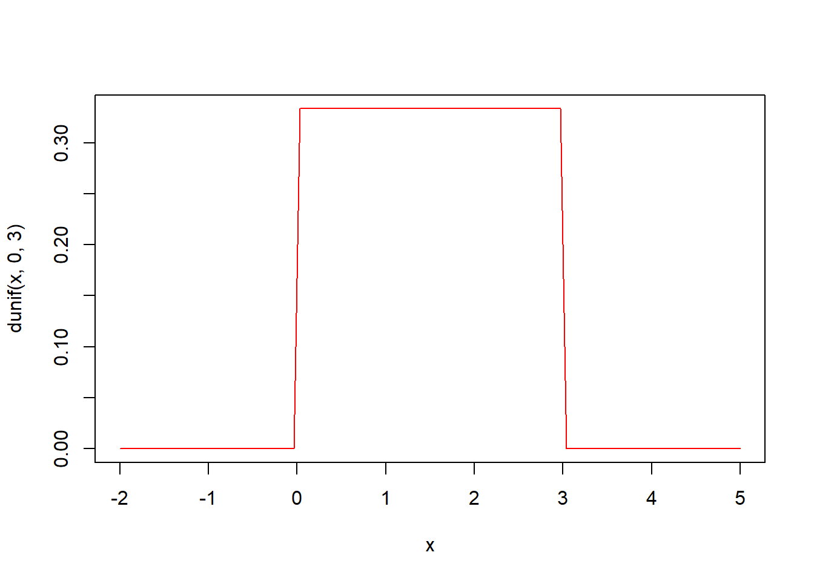
## [1] 1punif(q, min = 0, max = 1, lower.tail = TRUE, log.p = FALSE) 함수는 균일분포의 누적분포함수이다.
최소값(기본값 0)부터 최대값(기본값 1)사이의 균일분포함수에서 인자 q의 누적분포함수값 즉 확률을 구해 반환한다.
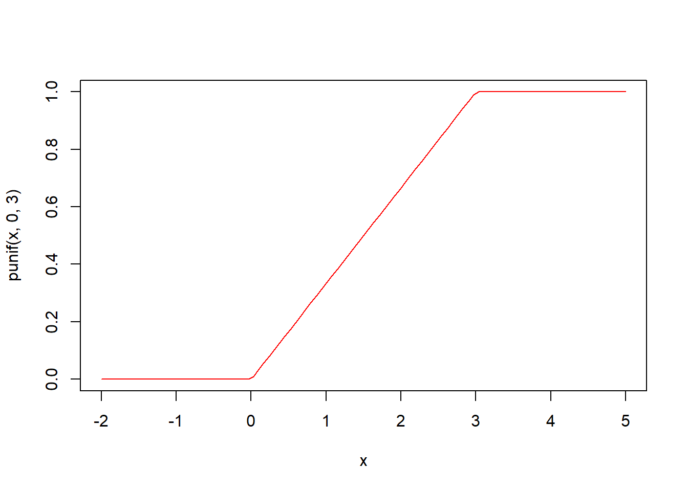
## [1] 0.1666667qunif(p, min = 0, max = 1, lower.tail = TRUE, log.p = FALSE) 함수는 균등분포의 분위수를 구하는 함수이다.
최소값(기본값 0)부터 최대값(기본값 1)사이의 균일분포함수에서 확률이 인자 p일 때의 분위수값을 구해 반환한다. punif 함수와 반대되는 함수라 할 수 있다.
## [1] 1.5## [1] 0.36.1.2 정규분포(normal distribution)
정규분포는 분포가 종 모양의 형태로 평균에 가까울수록 발생확률이 높고 평균에서 멀어질수록 발생할 확률이 낮은 분포이다. 가우스가 처음 정립해서 가우시안(Gaussian) 분포라고도 한다.
표준정규분포(standard normal distribution)는 평균이 0이고, 표준편차가 1인 정규분포를 의미한다.
“양 끝의 극단에 있는 것은 드물고 소수인 반면, 중간에 있는 것들은 흔하고 다수임을 알지 못하나?” - 소크라테스, 파이돈
정규분포와 관련된 함수는 다음 4가지 있다.
rnorm(n, mean = 0, sd = 1)dnorm(x, mean = 0, sd = 1, log = FALSE)pnorm(q, mean = 0, sd = 1, lower.tail = TRUE, log.p = FALSE)qnorm(p, mean = 0, sd = 1, lower.tail = TRUE, log.p = FALSE)
rnorm(n, mean = 0, sd = 1) 함수는 주어진 평균 mean(기본값 0)과 표준편차 sd(기본값 1)의 정규분포에서 n개의 난수를 생성하여 반환한다. rnorm 함수명은 난수를 의미하는 r과 정규분포를 의미하는 norm이 결합되어진 것이다.
## [1] -1.33729415 0.95562635 -1.34867485 0.93084050 -0.12658361 0.55331182
## [7] -0.23474307 0.57709048 0.04036607 -1.38877144## [1] 50.89519 48.46644 54.63976 44.70832 54.04371 51.25906 50.77539 48.71716
## [9] 51.07637 52.04166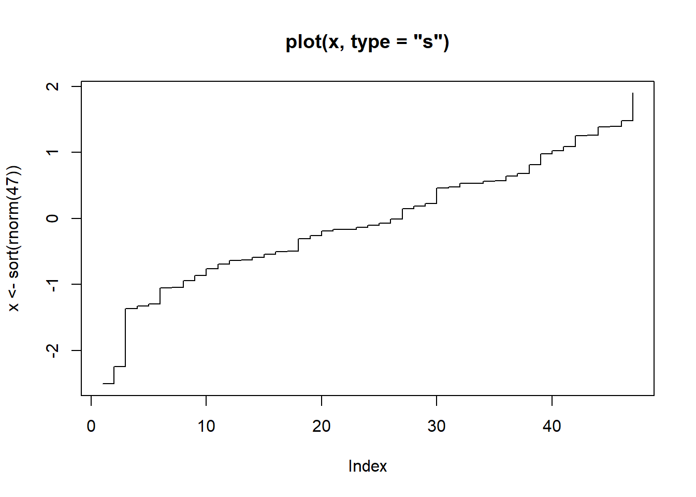
dnorm(x, mean = 0, sd = 1, log = FALSE) 함수는 정규분포의 확률밀도함수이다.
평균 mean(기본값 0)과 표준편차 sd(기본값 1)의 정규분포에서 인자 x의 함수값을 구해 반환한다.
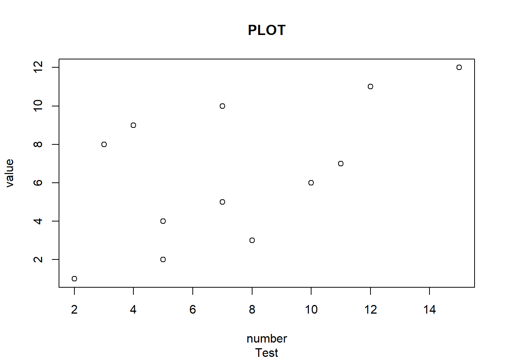
## [1] 0.3520653# 정규분포 그래프에서 -5에서 1까지의 면적은 전체면적의 84%
# pnorm(1, mean = 0, sd = 1)
#x <- seq(-5, 5, by = 0.01)
#plot(x, dnorm(x, 0, 1), type = "l", lwd = 2, col = "red")
curve(dnorm(x,0,1),-5,5,col="red")
u <- seq(-5, 1, by = 0.01)
v <- dnorm(u, mean = 0, sd = 1)
polygon(c(-5, u, 1), c(0, v, 0), col = "pink")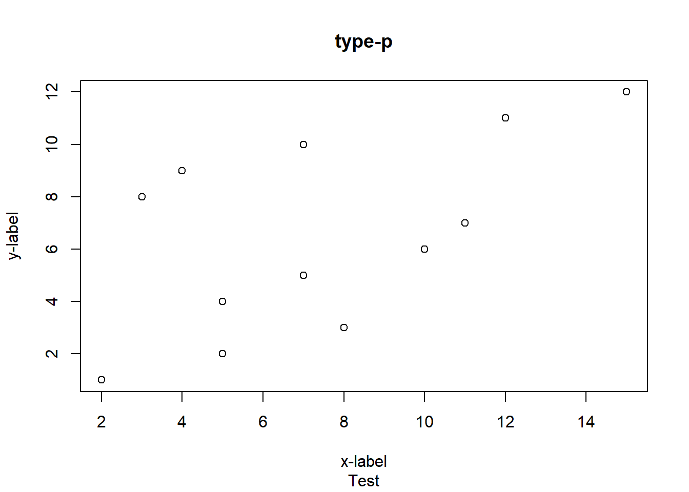
pnorm(q, mean = 0, sd = 1, lower.tail = TRUE, log.p = FALSE) 함수는 정규분포의 누적분포함수이다. 평균 mean(기본값 0)과 표준편차 sd(기본값 1)의 정규분포에서 인자 q의 누적분포함수값 즉 확률을 구해 반환한다.
x <- seq(-5, 5, by = 0.01)
# 정규분포의 누적분포함수 시각화
plot(x, pnorm(x, mean = 0, sd = 1), type = "l", col = "red")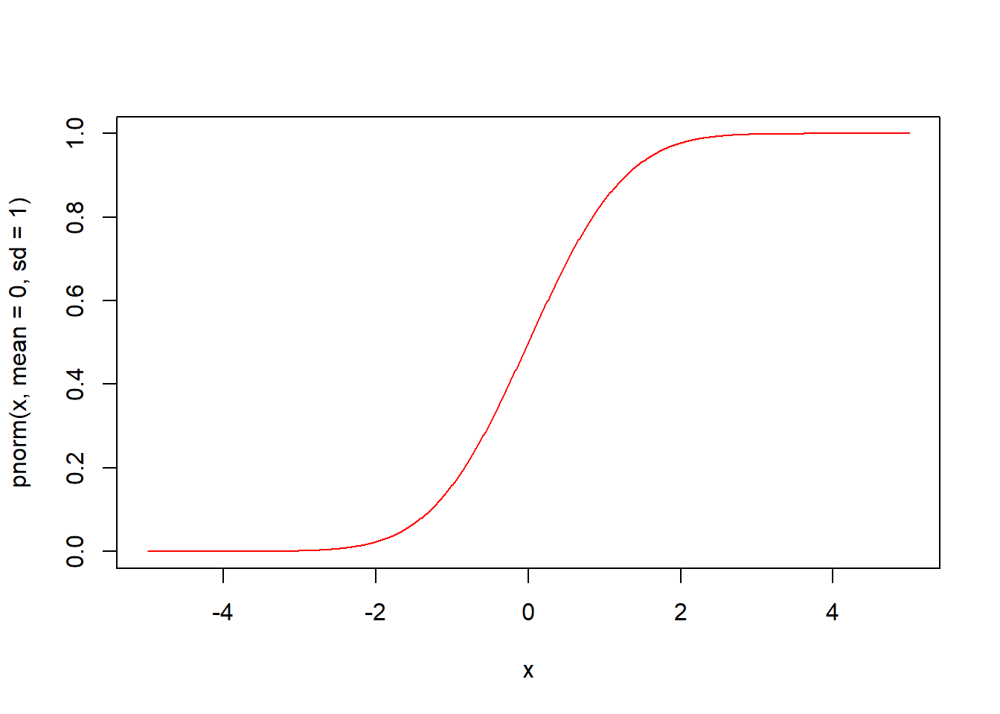
## [1] 0.6914625## [1] 0.8413447qnorm(p, mean = 0, sd = 1, lower.tail = TRUE, log.p = FALSE) 함수는 정규분포의 분위수를 구하는 함수이다. 평균 mean(기본값 0)과 표준편차 sd(기본값 1)의 정규분포에서 확률이 인자 p일 때의 분위수 값을 구해 반환한다.
## [1] 0.9998151## [1] 0.84134476.1.3 감마분포(gamma distribution)
감마분포는 r번째 사건이 일어날 때 까지 걸리는 시간에 대한 연속확률분포이다.
감마분포와 관련된 함수는 다음 4가지가 있다.
- rgamma(n, shape, rate = 1, scale = 1/rate)
- dgamma(x, shape, rate = 1, scale = 1/rate, log = FALSE)
- pgamma(q, shape, rate = 1, scale = 1/rate, lower.tail = TRUE, log.p = FALSE)
- qgamma(p, shape, rate = 1, scale = 1/rate, lower.tail = TRUE, log.p = FALSE)
rgamma(n, shape, rate = 1, scale = 1/rate) 함수는 주어진 형태 shape와 척도 scale(기본값 1/rate, rate의 기본값은 1)의 감마분포에서 n개의 난수를 생성하여 반환한다. rgamma 함수명은 난수를 의미하는 r과 감마분포를 의미하는 gamma가 결합되어진 것이다.
## [1] 0.2581036 0.6002025 1.1656063 0.6842389 3.5068940 0.7771006 0.3162879
## [8] 0.8748882 0.3832152 0.1820118## [1] 344.5802 1312.6582 3084.4127 475.4291 772.5243 246.6883 1170.0765
## [8] 616.6206 11.0429 3303.8842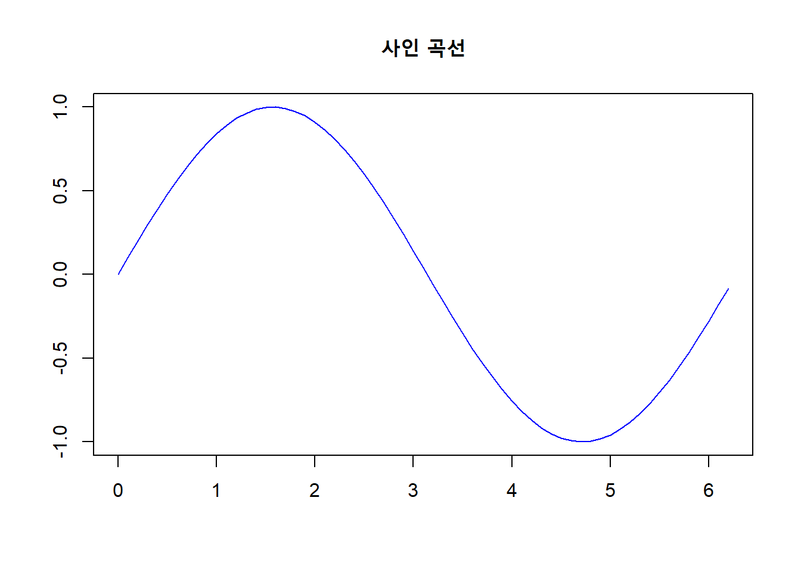
dgamma(x, shape, rate = 1, scale = 1/rate, log = FALSE) 함수는 감마분포의 확률밀도함수이다. 형태 shape와 척도 scale의 감마분포에서 인자 x의 함수값을 구해 반환한다.
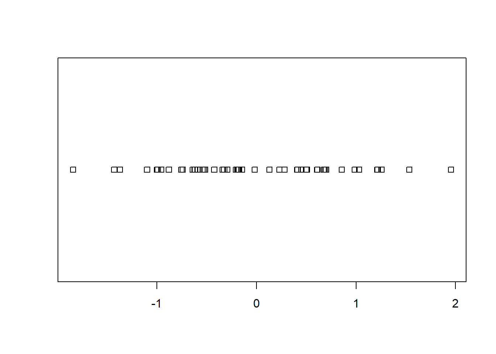
## [1] 0.6065307x <- seq(0, 10, by = 0.01)
plot(x, dgamma(x, shape = 1, scale = 2), type = "l", col = "red")
lines(x, dgamma(x, shape = 2, scale = 2), type = "l", col = "green")
lines(x, dgamma(x, shape = 3, scale = 2), type = "l", col = "blue")
lines(x, dgamma(x, shape = 4, scale = 2), type = "l", col = "purple")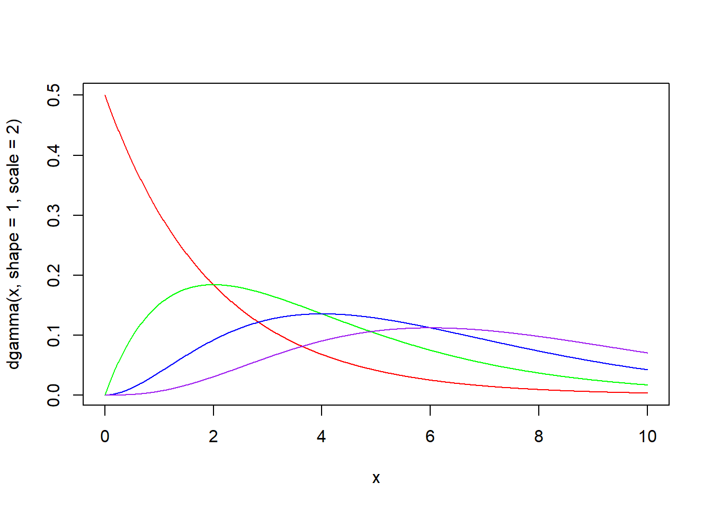
x <- seq(0, 10, by = 0.01)
plot(x, dgamma(x, shape = 2, scale = 2), type = "l", col = "red")
lines(x, dgamma(x, shape = 2, scale = 3), type = "l", col = "green")
lines(x, dgamma(x, shape = 2, scale = 4), type = "l", col = "blue")
lines(x, dgamma(x, shape = 2, scale = 5), type = "l", col = "purple")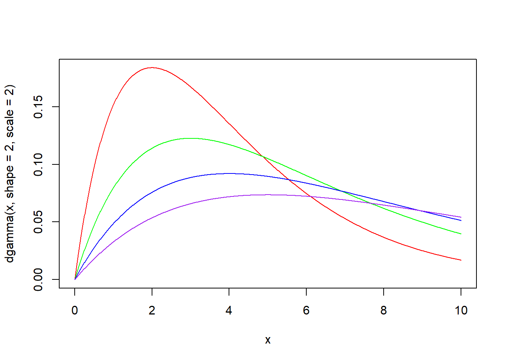
# 0에서 1까지의 면적은? pgamma(1, shape = 1)
x <- seq(0, 5, by = 0.01)
plot(x, dgamma(x, shape = 1), type = "l", lwd = 2, col = "red")
u <- seq(0, 1, by = 0.01)
v <- dgamma(u, shape = 1)
polygon(c(0, u, 1), c(0, v, 0), col = "pink")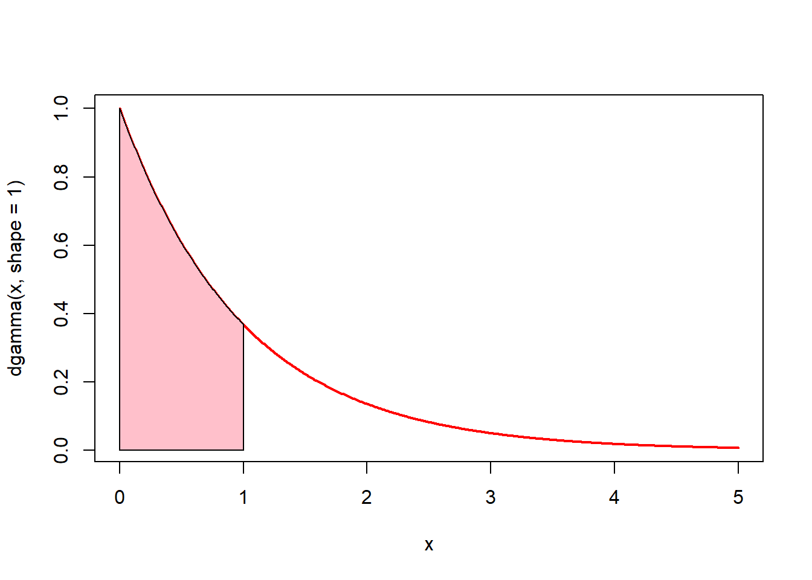
pgamma(q, shape, rate = 1, scale = 1/rate, lower.tail = TRUE, log.p = FALSE) 함수는 감마분포의 누적분포함수이다. 형태 shape와 척도 scale의 감마분포에서 인자 q의 누적분포함수값 즉 확률을 구해 반환한다.
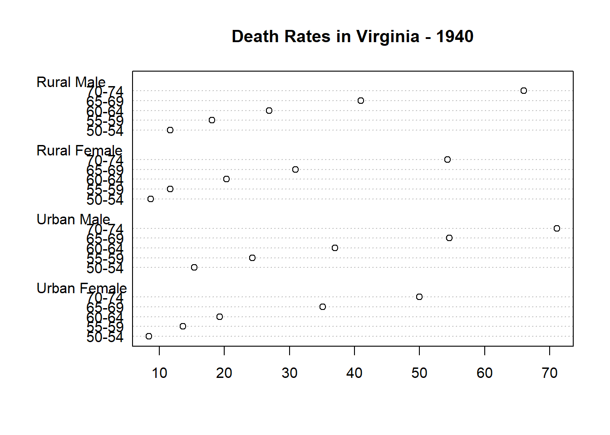
## [1] 0.3934693## [1] 0.6321206qgamma(p, shape, rate = 1, scale = 1/rate, lower.tail = TRUE, log.p = FALSE) 함수는 감마분포의 분위수를 구하는 함수이다. 형태 shape와 척도 scale의 감마분포에서 확률이 인자 p일 때의 분위수 값을 구해 반환한다.
## [1] 1.203973## [1] 0.69880586.1.4 지수분포(exponential distribution)
지수분포는 감마분포의 특수한 경우라고 볼 수 있다. 감마분포가 r번째 사건이 일어날 때 까지 걸리는 시간에 대한 분포라면, 지수분포는 첫번째 사건이 발생할 때 까지 걸리는 시간에 대한 분포라고 할 수 있다.
지수분포와 관련된 함수는 다음 4가지가 있다.
- rexp(n, rate = 1)
- dexp(x, rate = 1, log = FALSE)
- pexp(q, rate = 1, lower.tail = TRUE, log.p = FALSE)
- qexp(p, rate = 1, lower.tail = TRUE, log.p = FALSE)
rexp(n, rate = 1) 함수는 주어진 감마값 rate(기본값 1)의 지수분포에서 n개의 난수를 생성하여 반환한다. rexp 함수명은 난수를 의미하는 r과 지수분포를 의미하는 exp가 결합되어진 것이다.
## [1] 0.84345726 0.57661027 1.32905487 0.03157736 0.05621098 0.31650122
## [7] 0.31422729 0.14526680 2.72623646 0.02915345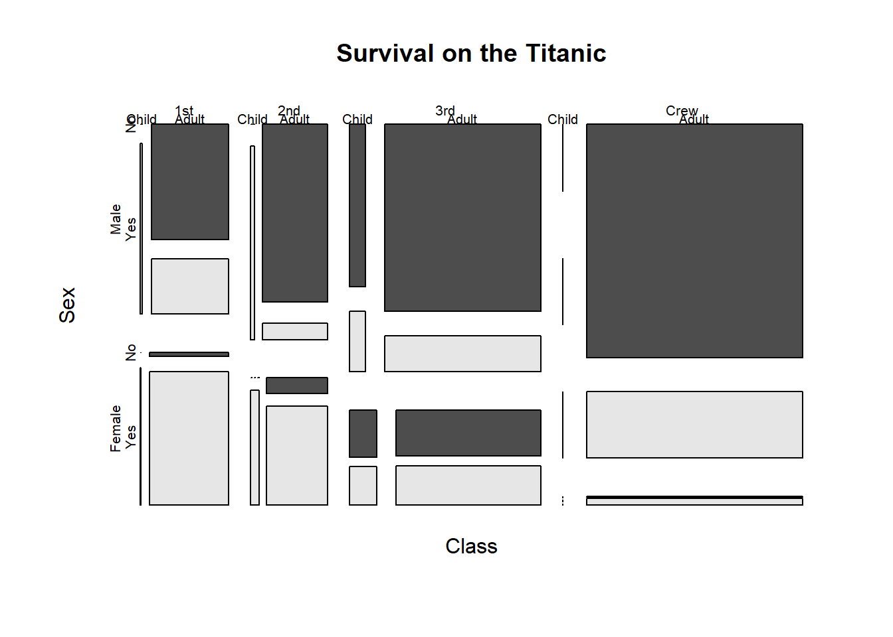
dexp(x, rate = 1, log = FALSE) 함수는 지수분포의 확률밀도함수이다. 주어진 감마값 rate(기본값 1)의 지수분포에서 인자 x의 함수값을 구해 반환한다.
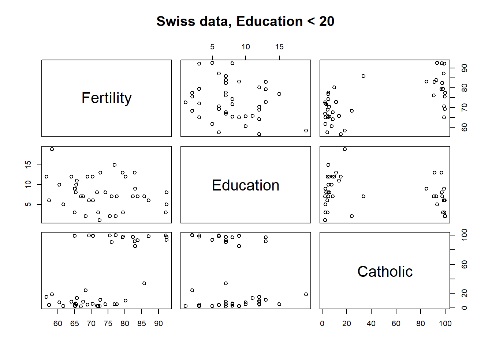
## [1] 0.6065307# 0에서 1까지의 면적(핑크색)은? pexp(1, rate = 1)
x <- seq(0, 5, by = 0.01)
plot(x, dexp(x, rate = 1), type = "l", lwd = 2, col = "red")
u <- seq(0, 1, by = 0.01)
v <- dexp(u, rate = 1)
polygon(c(0, u, 1), c(0, v, 0), col = "pink")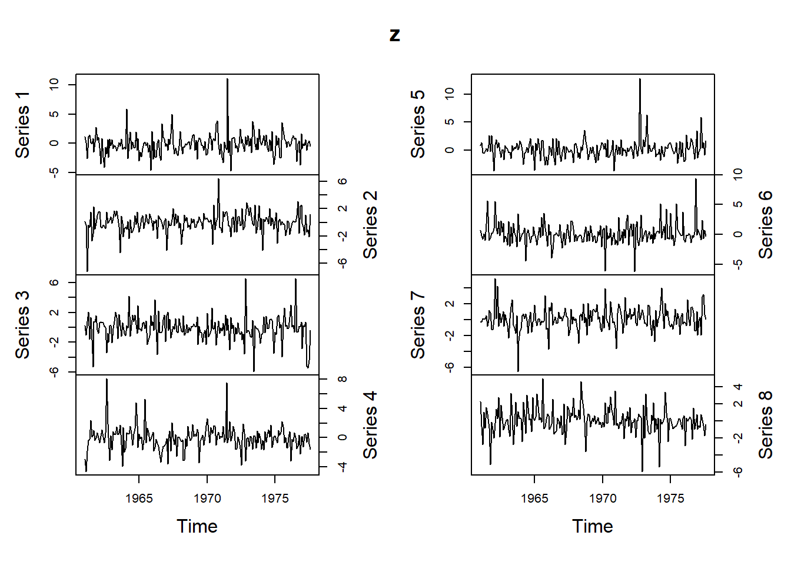
pexp(q, rate = 1, lower.tail = TRUE, log.p = FALSE) 함수는 지수분포의 누적분포함수이다. 주어진 rate(기본값 1)의 지수분포에서 인자 q의 누적분포함수값 즉 확률을 구해 반환한다.
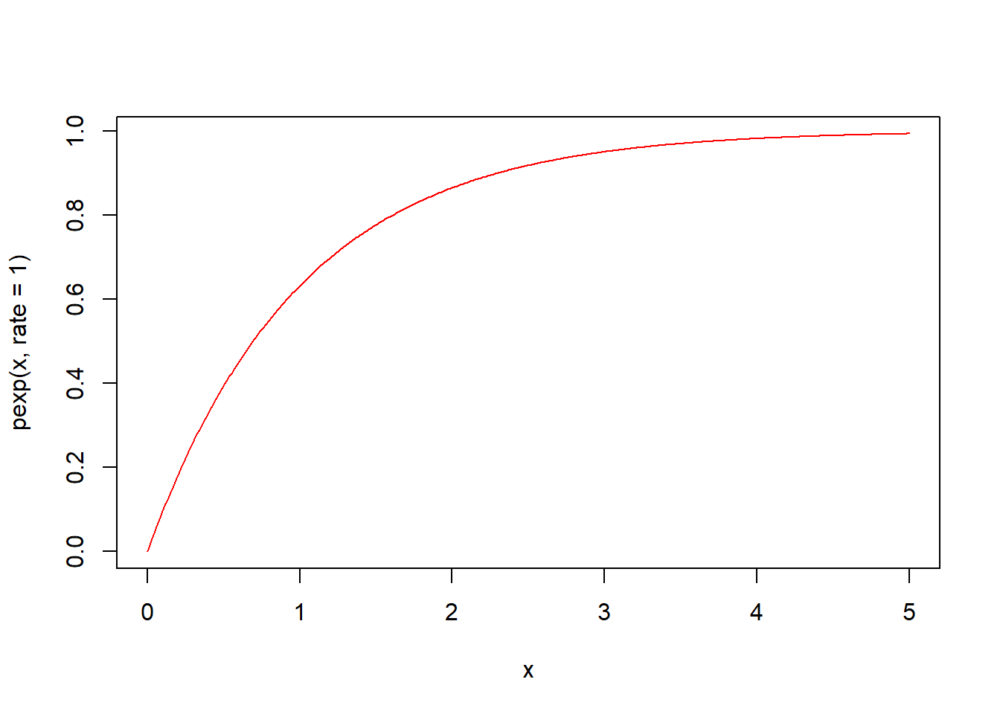
## [1] 0.3934693## [1] 0.6321206qexp(p, rate = 1, lower.tail = TRUE, log.p = FALSE) 함수는 지수분포의 분위수를 구하는 함수이다. 주어진 rate의 지수분포에서 확률이 인자 p일 때의 분위수 값을 구해 반환한다.
## [1] 1.203973## [1] 0.70000826.1.5 베타분포(beta distribution)
베타분포는 두 매개변수 α와 β에 따라 [0, 1] 구간에서 정의되는 분포이다. 베타분포는 주로 베이지안 추정에서 많이 다루어지는 분포이다. 모수가 α와 β 두 개이므로 다양한 형태의 분포가 만들어질 수 있다.
베타분포와 관련된 함수는 다음 4가지가 있다.
- rbeta(n, shape1, shape2, ncp = 0)
- dbeta(x, shape1, shape2, ncp = 0, log = FALSE)
- pbeta(q, shape1, shape2, ncp = 0, lower.tail = TRUE, log.p = FALSE)
- qbeta(p, shape1, shape2, ncp = 0, lower.tail = TRUE, log.p = FALSE)
위 함수에서 인자 shape1과 shape2는 각각 베타분포의 매개변수 α와 β라 할 수 있다.
rbeta(n, shape1, shape2, ncp = 0) 함수는 매개변수 shape1과 shape2의 베타분포에서 n개의 난수를 생성하여 반환한다. rbeta 함수명은 난수를 의미하는 r과 베타분포를 의미하는 beta가 결합되어진 것이다.
## [1] 0.71242248 0.59102308 0.05953272 0.47189451 0.44856499 0.04316665
## [7] 0.32242936 0.89707532 0.75391227 0.67207928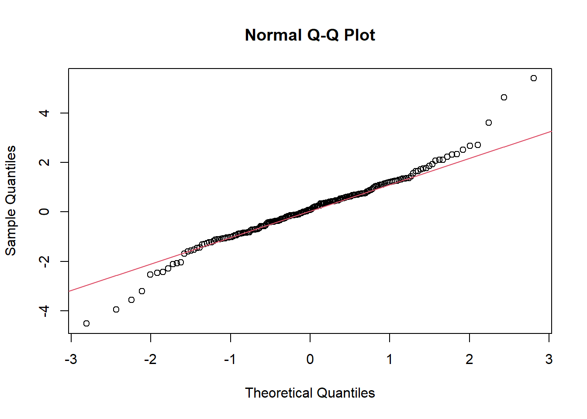
dbeta(x, shape1, shape2, ncp = 0, log = FALSE) 함수는 베타분포의 확률밀도함수이다. 매개변수 shape1과 shape2의 베타분포에서 인자 x의 함수값을 구해 반환한다.
x <- seq(0, 1, by = 0.01)
# 확률밀도함수 시각화
plot(x, dbeta(x, shape1 = 2, shape2 = 5), type = "l", col = "red")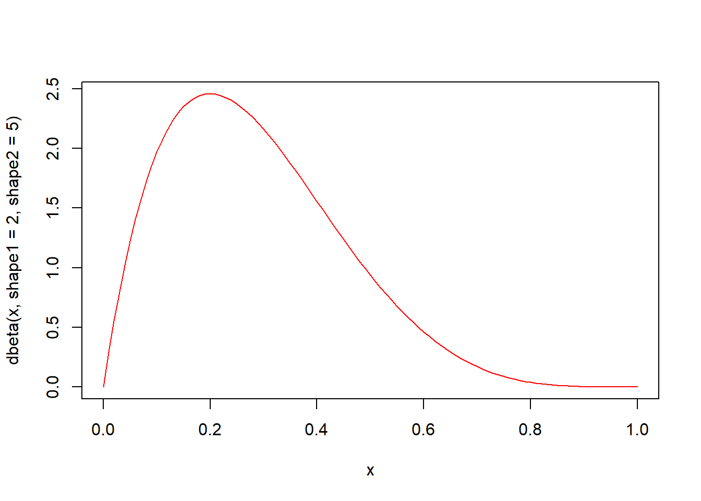
## [1] 0.9375매개변수 shape1과 shape2의 값에 따라 다양한 형태의 분포가 나온다.
x <- seq(0, 1, by = 0.01)
plot(x, dbeta(x, shape1 = 1, shape2 = 2), type = "l", col = "red")
lines(x, dbeta(x, shape1 = 2, shape2 = 2), type = "l", col = "green")
lines(x, dbeta(x, shape1 = 3, shape2 = 2), type = "l", col = "blue")
lines(x, dbeta(x, shape1 = 4, shape2 = 2), type = "l", col = "purple")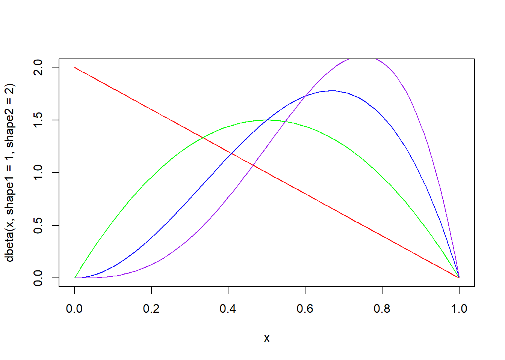
x <- seq(0, 1, by = 0.01)
plot(x, dbeta(x, shape1 = 2, shape2 = 1), type = "l", col = "red")
lines(x, dbeta(x, shape1 = 2, shape2 = 2), type = "l", col = "green")
lines(x, dbeta(x, shape1 = 2, shape2 = 3), type = "l", col = "blue")
lines(x, dbeta(x, shape1 = 2, shape2 = 4), type = "l", col = "purple")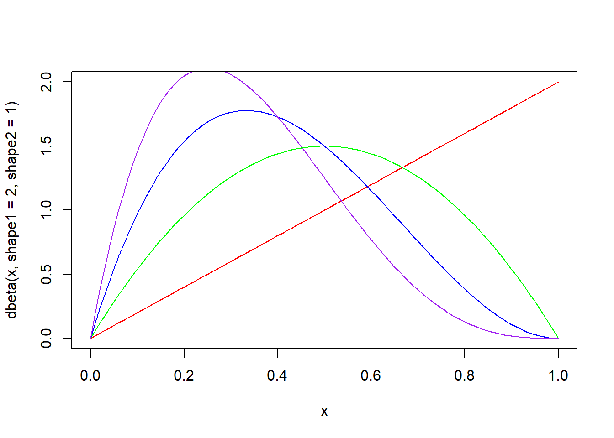
# 0에서 0.5까지의 면적은? pbeta(0.5, shape1 = 2, shape2 = 3)
x <- seq(0, 1, by = 0.01)
plot(x, dbeta(x, shape1 = 2, shape2 = 3), type = "l", lwd = 2, col = "red")
u <- seq(0, 0.5, by = 0.01)
v <- dbeta(u, shape1 = 2, shape2 = 3)
polygon(c(0, u, 0.5), c(0, v, 0), col = "pink")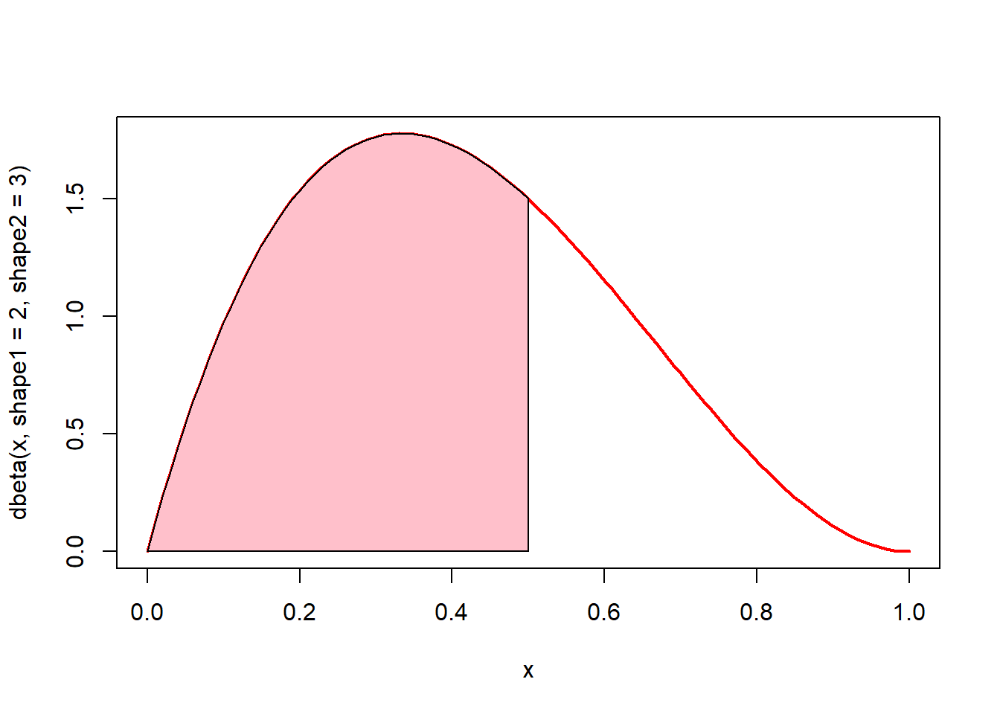
pbeta(q, shape1, shape2, ncp = 0, lower.tail = TRUE, log.p = FALSE) 함수는 베타분포의 누적분포함수이다. 매개변수 shape1과 shape2의 베타분포에서 인자 q의 누적분포함수값 즉 확률을 구해 반환한다.
x <- seq(0, 1, by = 0.01)
# 누적분포함수 시각화
plot(x, pbeta(x, shape1 = 2, shape2 = 3), type = "l", col = "red")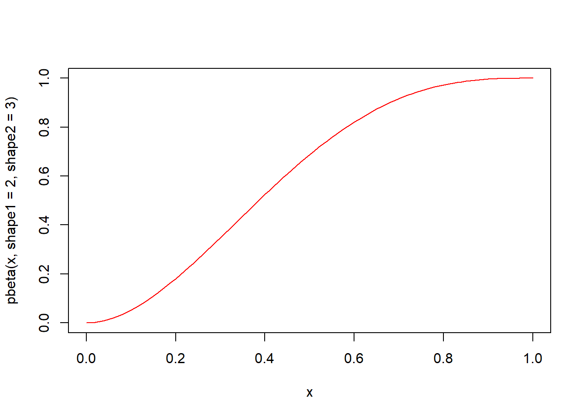
## [1] 0.6875qbeta(p, shape1, shape2, ncp = 0, lower.tail = TRUE, log.p = FALSE) 함수는 베타분포의 분위수를 구하는 함수이다. 매개변수 shape1과 shape2의 베타분포에서 확률이 인자 p일 때의 분위수 값을 구해 반환한다.
## [1] 0.5084048## [1] 0.6999936.1.6 t분포(t distribution)
t분포는 ’스튜던트 t분포(Student’s t-distribution)’를 간단하게 부르는 말이다. t분포는 프리드리히 로베르트 헬메르트(1875)와 야코프 뤼로트(1876)가 발견하였는데 학계에 널리 알려지지 않다가, 1908년에 기네스 양조 공장에서 일하는 윌리엄 고셋이 ’스튜던트’라는 필명으로 맥주에 사용되는 보리의 질을 시험하기 위해 이 분포를 도입하였습니다. 저명한 통계학자인 로널드 피셔가 이 분포를 ’스튜던트 t분포’로 소개하면서 널리 알려지게 되었습니다.
t 분포는 종모양으로서 좌우대칭을 이룹니다. 정규분포와 비슷한 모양이지만 정규분포보다는 옆으로 넓게 더 퍼진 모양이라고 볼 수 있다. t 분포의 모양을 결정하는 것은 자유도(degree of freedom)이며, 자유도가 커질수록 표준정규분포에 가까워진다.
t분포와 관련된 함수는 4가지가 있다.
- rt(n, df, ncp)
- dt(x, df, ncp, log = FALSE)
- pt(q, df, ncp, lower.tail = TRUE, log.p = FALSE)
- qt(p, df, ncp, lower.tail = TRUE, log.p = FALSE)
위 함수에서 인자 df는 자유도를 의미한다. t분포에서 자유도는 표본의 갯수인 n에서 1을 뺀 값이다. ncp는 비중심모수(non-centrally parameter)이다.
rt(n, df, ncp) 함수는 자유도 df의 t분포에서 n개의 난수를 생성하여 반환한다. rt 함수명은 난수를 의미하는 r과 t분포를 의미하는 t가 결합되어진 것이다.
## [1] -0.7757158 -1.2775288 -0.1417660 -2.3597923 1.6535141 2.4295408
## [7] 0.6134958 0.6183647 -0.8972597 -4.8866728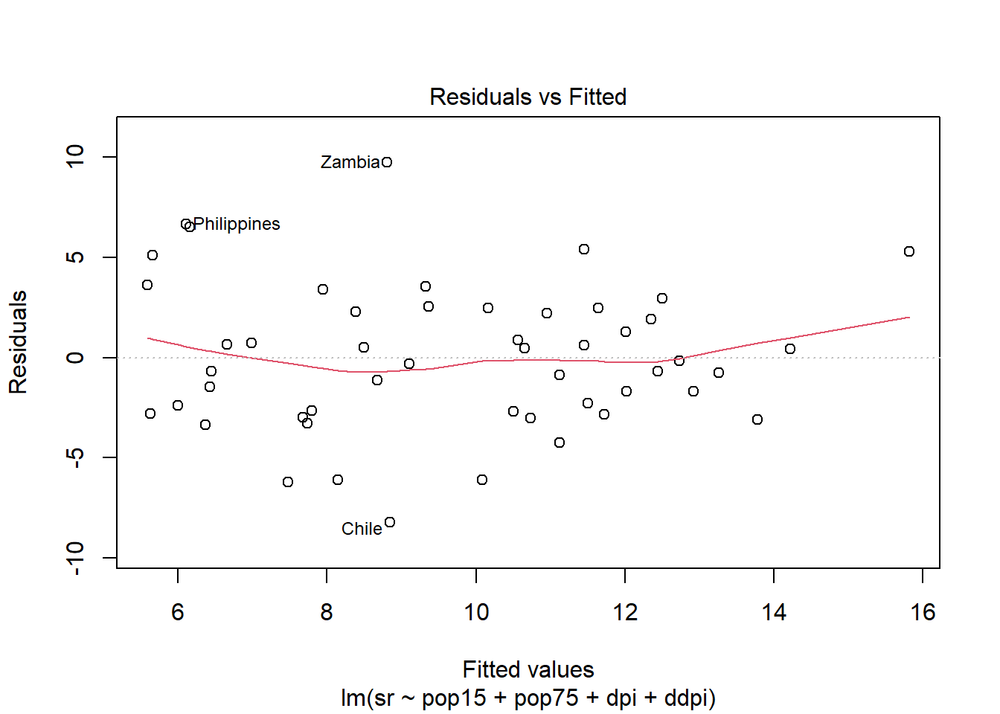
dt(x, df, ncp, log = FALSE) 함수는 t분포의 확률밀도함수이다. 자유도 df의 t분포에서에서 인자 x의 함수값을 구해 반환한다.
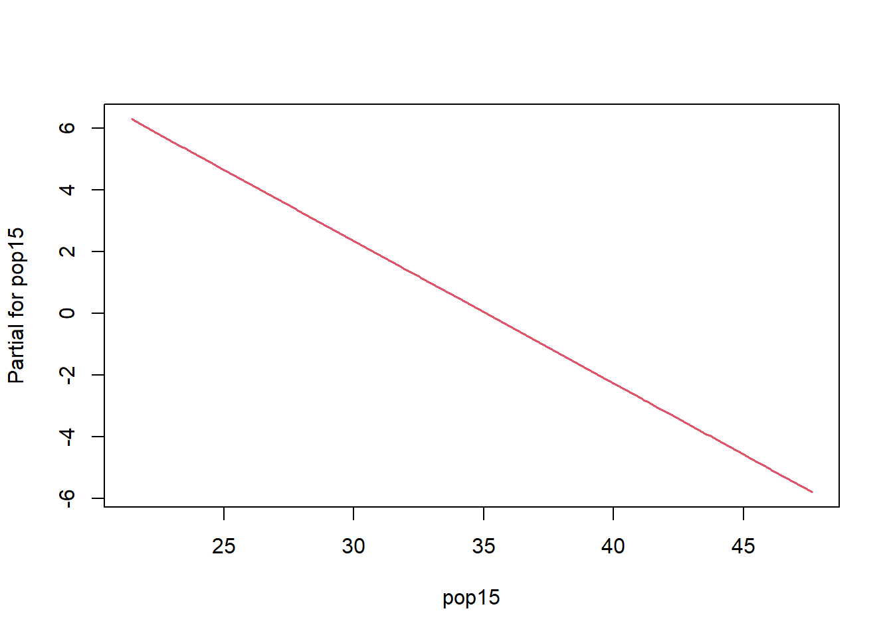
## [1] 0.2962963자유도 df의 값에 따라 다양한 형태의 분포가 나옵니다. df가 커질수록 정규분포에 가까워진다. 검은색 선은 표준정규분포선이다. 자유도가 30에 가까워질수록 t분포는 정규분포에 가까워지는 것을 볼 수 있다.
x <- seq(-5, 5, by = 0.01)
plot(x, dt(x, df = 28), type = "l", col = "red")
lines(x, dt(x, df = 10), type = "l", col = "green")
lines(x, dt(x, df = 5), type = "l", col = "blue")
lines(x, dt(x, df = 2), type = "l", col = "purple")
lines(x, dnorm(x), type = "l", lwd =2, col = "black")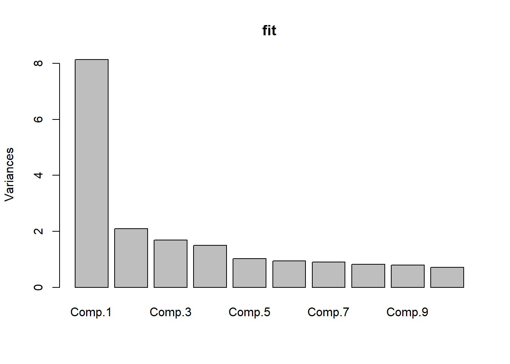
x <- seq(-5, 8, by = 0.01)
plot(x, dt(x, df = 15), type = "l", col = "red")
lines(x, dt(x, df = 15, ncp = 1), type = "l", col = "green")
lines(x, dt(x, df = 15, ncp = 2), type = "l", col = "blue")
lines(x, dt(x, df = 15, ncp = 3), type = "l", col = "purple")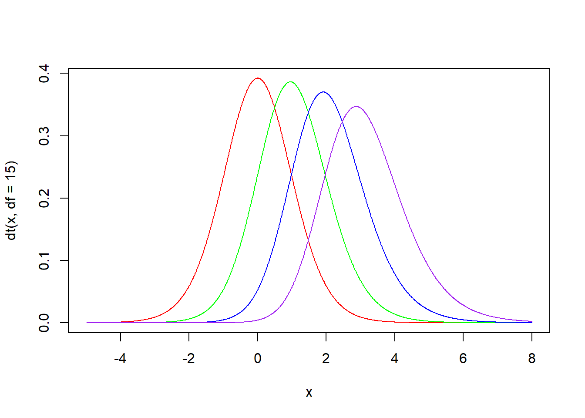
# 0.5이하의 면적은? pt(0.5, df = 10)
x <- seq(-5, 5, by = 0.01)
plot(x, dt(x, df = 10), type = "l", lwd = 2, col = "red")
u <- seq(-5, 0.5, by = 0.01)
v <- dt(u, df = 10)
polygon(c(-5, u, 0.5), c(0, v, 0), col = "pink")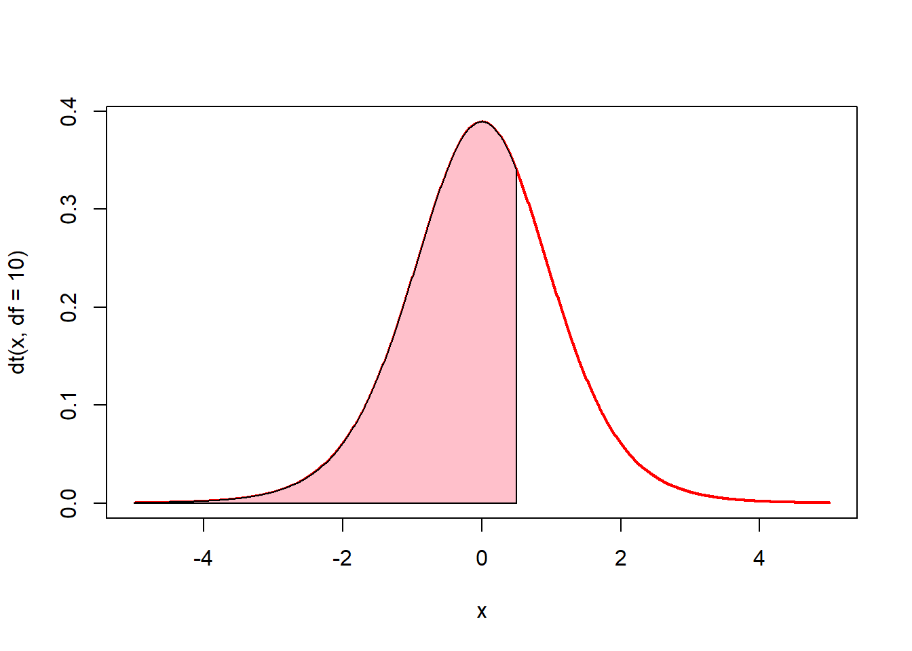
pt(q, df, ncp, lower.tail = TRUE, log.p = FALSE) 함수는 t분포의 누적분포함수이다. 자유도 df의 t분포에서 인자 q의 누적분포함수값 즉 확률을 구해 반환한다.
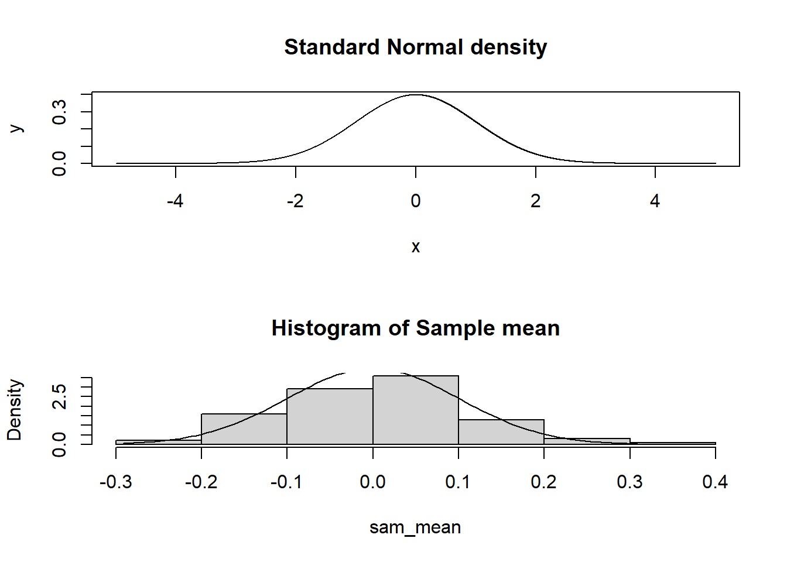
## [1] 0.6860532qt(p, df, ncp, lower.tail = TRUE, log.p = FALSE) 함수는 t분포의 분위수를 구하는 함수이다. 자유도 df의 t분포에서 확률이 인자 p일 때의 분위수 값을 구해 반환한다.
## [1] 0.541528## [1] 0.69999076.1.7 카이제곱분포(chisquare distribution)
카이제곱분포(\(χ^2\)분포)는 k개의 서로 독립적인 표준정규분포의 확률변수를 각각 제곱한 다음 합해서 얻어지는 분포이다. 이때 k는 자유도(df)로서 카이제곱분포의 매개변수가 된다. 카이제곱분포는 감마분포의 특수한 형태라고 할 수 있다.
카이제곱분포는 오른쪽으로 긴 꼬리를 가진 비대칭 분포모양을 가지고 있다. 카이제곱분포의 모양을 결정하는 것은 자유도이며, 자유도가 커질수록 정규분포에 가깝게 된다. 카이제곱분포는 모분산에 대한 추정과 검정에 사용되며, 범주형 자료의 적합도 검정, 동질성 검정, 독립성 검정 등에 사용된다.
카이제곱분포와 관련된 함수는 4가지가 있다.
- rchisq(n, df, ncp = 0)
- dchisq(x, df, ncp = 0, log = FALSE)
- pchisq(q, df, ncp = 0, lower.tail = TRUE, log.p = FALSE)
- qchisq(p, df, ncp = 0, lower.tail = TRUE, log.p = FALSE)
위 함수에서 인자 df는 자유도를 의미한다.
rchisq(n, df, ncp = 0) 함수는 자유도 df의 카이제곱분포에서 n개의 난수를 생성하여 반환한다. rchisq 함수명은 난수를 의미하는 r과 카이제곱분포를 의미하는 chisq가 결합되어진 것이다.
## [1] 1.03611518 5.08870916 0.04818784 2.26693313 6.90085393 3.02805429
## [7] 8.96365401 10.25291596 3.24894708 2.50479854
dchisq(x, df, ncp = 0, log = FALSE) 함수는 카이제곱분포의 확률밀도함수이다. 자유도 df의 카이제곱분포에서에서 인자 x의 함수값을 구해 반환한다.
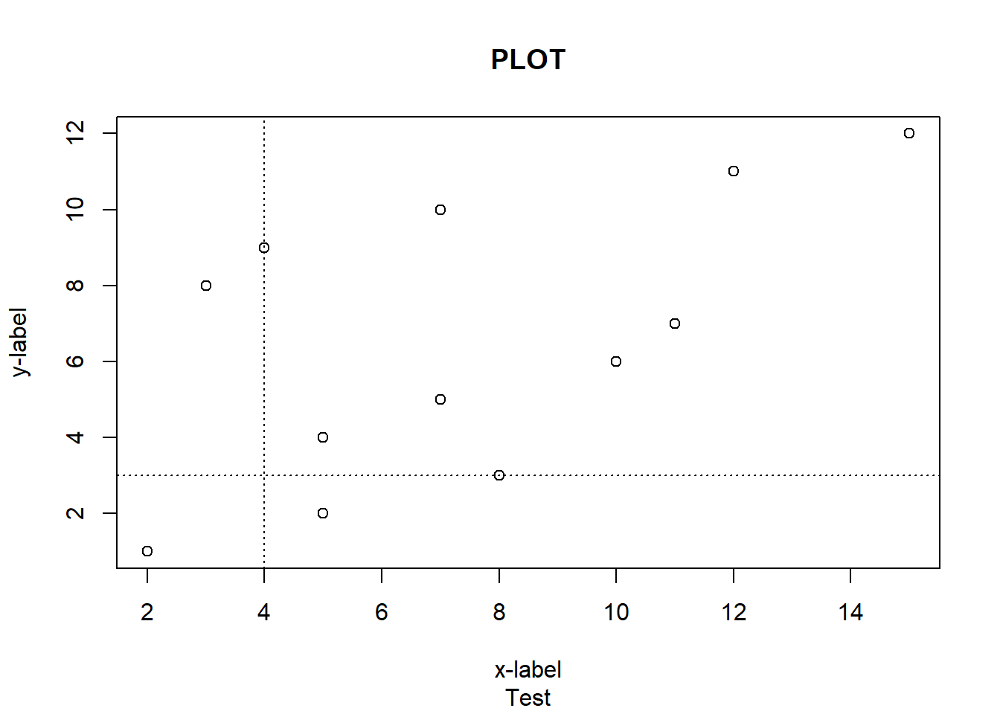
## [1] 0.3894004자유도 df의 값에 따라 다양한 형태의 분포가 나옵니다. df가 커질수록 정규분포에 가까워진다.
x <- seq(0, 15, by = 0.01)
plot(x, dchisq(x, df = 2), type = "l", col = "red")
lines(x, dchisq(x, df = 4), type = "l", col = "green")
lines(x, dchisq(x, df = 6), type = "l", col = "blue")
lines(x, dchisq(x, df = 8), type = "l", col = "purple")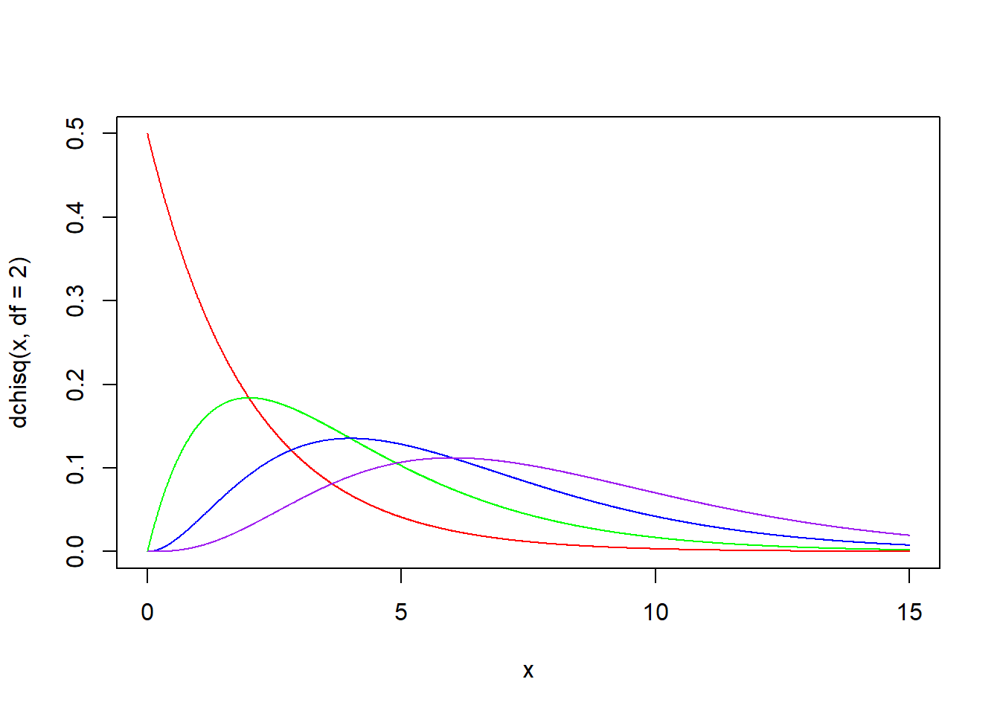
x <- seq(0, 15, by = 0.01)
plot(x, dchisq(x, df = 5), type = "l", col = "red")
lines(x, dchisq(x, df = 5, ncp = 1), type = "l", col = "green")
lines(x, dchisq(x, df = 5, ncp = 2), type = "l", col = "blue")
lines(x, dchisq(x, df = 5, ncp = 3), type = "l", col = "purple")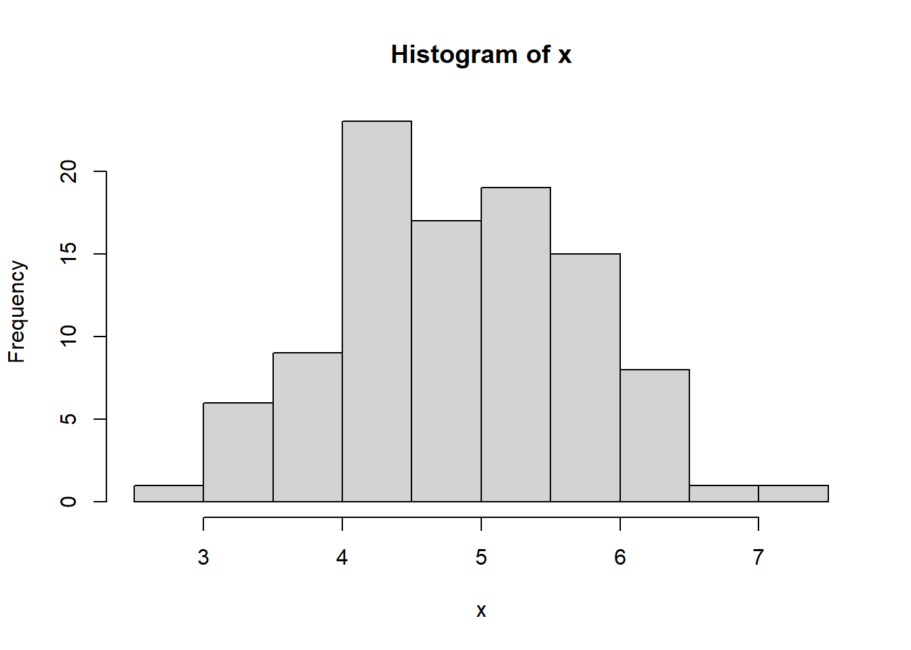
# 0에서 5까지의 면적은? pchisq(5, df = 3)
x <- seq(0, 15, by = 0.01)
plot(x, dchisq(x, df = 3), type = "l", lwd = 2, col = "red")
u <- seq(0, 5, by = 0.01)
v <- dchisq(u, df = 3)
polygon(c(0, u, 5), c(0, v, 0), col = "pink")
pchisq(q, df, ncp = 0, lower.tail = TRUE, log.p = FALSE) 함수는 카이제곱분포의 누적분포함수이다. 자유도 df의 카이제곱분포에서 인자 q의 누적분포함수값 즉 확률을 구해 반환한다.
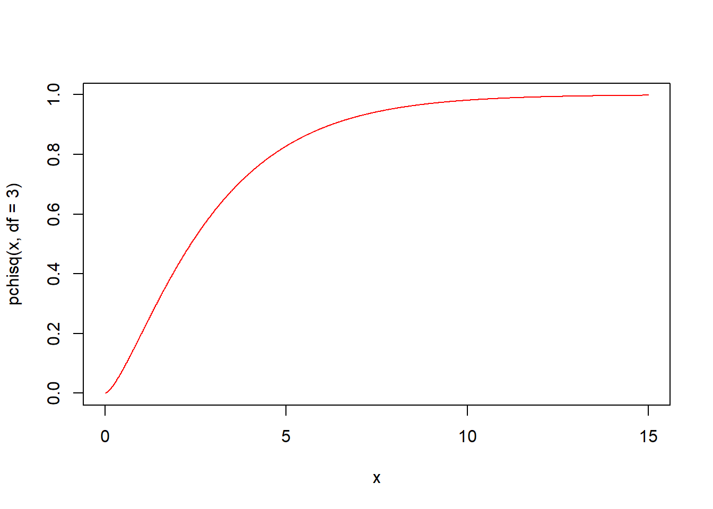
## [1] 0.8282029qchisq(p, df, ncp = 0, lower.tail = TRUE, log.p = FALSE) 함수는 카이제곱분포의 분위수를 구하는 함수이다. 자유도 df의 카이제곱분포에서 확률이 인자 p일 때의 분위수 값을 구해 반환한다.
## [1] 3.664871## [1] 0.69999136.1.8 F분포(F distribution)
F분포는 두개의 독립적인 카이제곱분포의 확률변수의 비(ratio)로 얻어지는 연속확률분포이다.
F분포는 카이제곱분포처럼 오른쪽으로 긴 꼬리를 가진 비대칭 분포모양을 가지고 있다. F분포의 모양을 결정하는 것은 분자와 분모의 자유도이며, 두 자유도가 커질수록 정규분포에 가깝게 된다. F분포는 분산의 비교, 분산분석, 회귀분석 등에 많이 사용된다.
F분포와 관련된 함수는 4가지가 있다.
- rf(n, df1, df2, ncp)
- df(x, df1, df2, ncp, log = FALSE)
- pf(q, df1, df2, ncp, lower.tail = TRUE, log.p = FALSE)
- qf(p, df1, df2, ncp, lower.tail = TRUE, log.p = FALSE)
위 함수에서 인자 df1과 df2는 자유도를 의미한다.
rf(n, df1, df2, ncp) 함수는 자유도 df1과 df2의 F분포에서 n개의 난수를 생성하여 반환한다. rf 함수명은 난수를 의미하는 r과 F분포를 의미하는 f가 결합되어진 것이다.
## [1] 0.1074551 0.6620983 0.3295549 4.0325202 20.4595652 3.6238492
## [7] 2.4802487 3.8352287 32.2406548 0.9558482
df(x, df1, df2, ncp, log = FALSE) 함수는 F분포의 확률밀도함수이다. 자유도 df1과 df2의 F분포에서 인자 x의 함수값을 구해 반환한다.
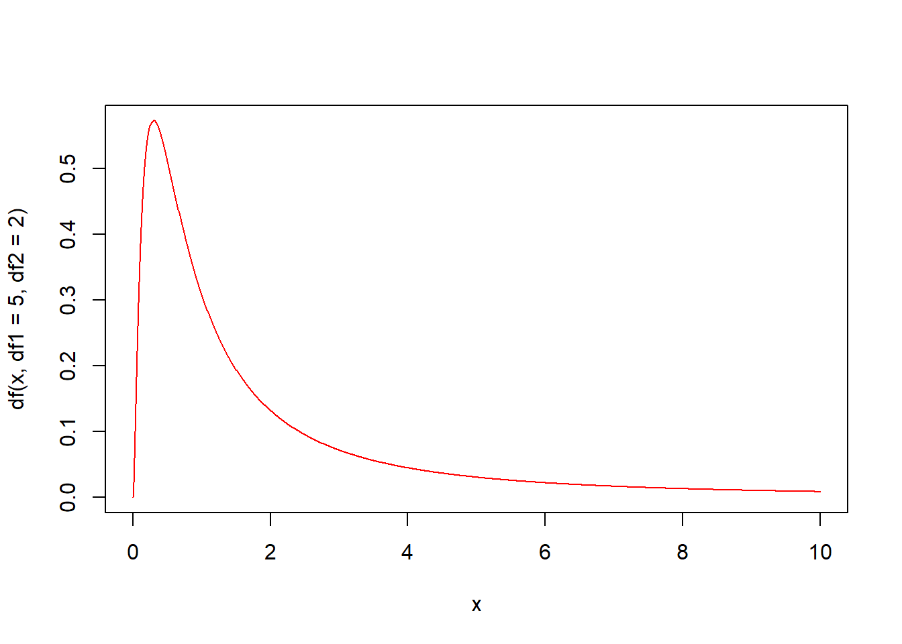
## [1] 0.5112181자유도 df1과 df2의 값에 따라 다양한 형태의 분포가 나옵니다. df1과 df2가 커질수록 정규분포에 가까워진다.
x <- seq(0, 5, by = 0.01)
plot(x, df(x, df1 = 2, df2 = 1), type = "l", col = "red")
lines(x, df(x, df1 = 5, df2 = 1), type = "l", col = "green")
lines(x, df(x, df1 = 10, df2 = 1), type = "l", col = "blue")
lines(x, df(x, df1 = 20, df2 = 20), type = "l", col = "purple")
x <- seq(0, 5, by = 0.01)
plot(x, df(x, df1 = 20, df2 = 20), type = "l", col = "red")
lines(x, df(x, df1 = 3, df2 = 5), type = "l", col = "green")
lines(x, df(x, df1 = 3, df2 = 10), type = "l", col = "blue")
lines(x, df(x, df1 = 3, df2 = 15), type = "l", col = "purple")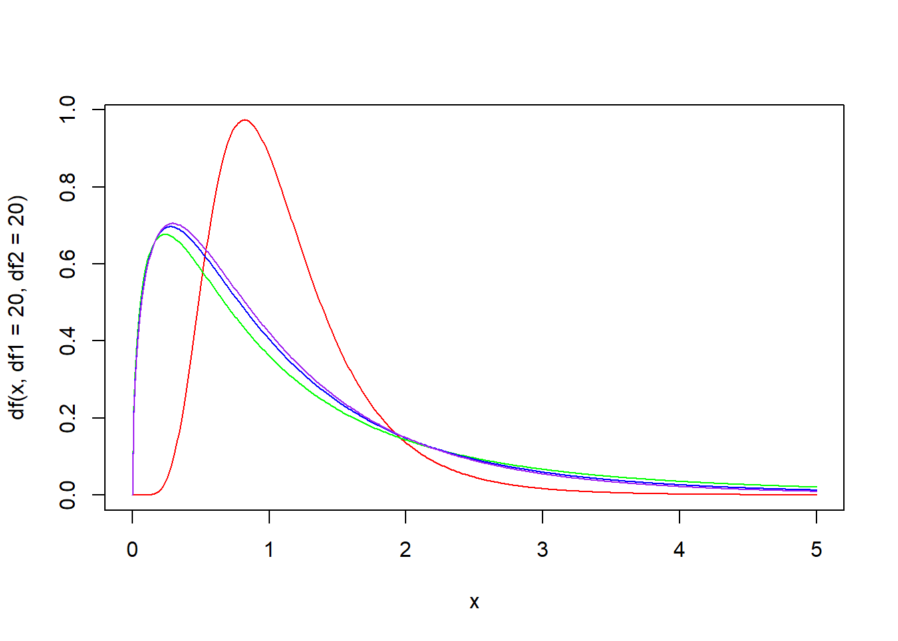
# 0에서 2까지의 면적은? pf(2, df1 = 3, df2 =3)
x <- seq(0, 5, by = 0.01)
plot(x, df(x, df1 = 3, df2 = 3), type = "l", lwd = 2, col = "red")
u <- seq(0, 2, by = 0.01)
v <- df(u, df1 = 3, df2 = 3)
polygon(c(0, u, 2), c(0, v, 0), col = "pink")
pf(q, df1, df2, ncp, lower.tail = TRUE, log.p = FALSE) 함수는 F분포의 누적분포함수이다. 자유도 df1과 df2의 F분포에서 인자 q의 누적분포함수값 즉 확률을 구해 반환한다.

## [1] 0.7082086qf(p, df1, df2, ncp, lower.tail = TRUE, log.p = FALSE) 함수는 F분포의 분위수를 구하는 함수이다. 자유도 df1과 df2의 F분포에서 확률이 인자 p일 때의 분위수 값을 구해 반환한다.
## [1] 1.939843## [1] 0.6999946.1.9 와이불분포(weibull distribution)
Weibull분포는 와이불분포 또는 베이블분포 등으로 불린다. Weibull분포는 지수분포를 보다 일반화시켜 여러 다양한 확률분포 형태를 나타낼 수 있도록 고안된 확률분포이다. 스웨덴의 물리학자 와이불(W. Weibull)이 1939년 재료의 파괴강도에 대한 분포를 표시하기 위해 이 분포를 발표하였다. 주로 산업현장에서 부품의 수명을 추정하는 데 많이 사용되는 분포이다. 또한 날씨예보, 신뢰성 공학에서의 실패분석 등에 사용되기도 한다.
Weibull분포의 모양을 결정하는 것은 형상 모수(shape parameter)와 척도 모수(scale parameter)이다. 형상모수의 값이 낮으면 오른쪽으로 치우친 곡선을, 높으면 왼쪽으로 치우친 곡선을 나타내며, 값이 3이면 정규분포에 가까운 곡선을 나타냅니다. 척도모수의 값이 크면 분포가 좁아지고, 반대로 값이 크면 분포가 넓어진다.
Weibull분포와 관련된 함수는 4가지가 있다.
- rweibull(n, shape, scale = 1)
- dweibull(x, shape, scale = 1, log = FALSE)
- pweibull(q, shape, scale = 1, lower.tail = TRUE, log.p = FALSE)
- qweibull(p, shape, scale = 1, lower.tail = TRUE, log.p = FALSE)
위 함수에서 인자 shape는 형상모수, scale은 척도모수를 의미한다.
rweibull(n, shape, scale = 1) 함수는 형상모수 shape와 척도모수 scale의 Weibull분포에서 n개의 난수를 생성하여 반환한다. rweibull 함수명은 난수를 의미하는 r과 Weibull분포를 의미하는 weibull이 결합되어진 것이다.
## [1] 2.2327228 0.9754384 1.8911336 0.7054371 0.4954934 3.5149976 1.5980729
## [8] 0.6747428 1.5430247 1.7707798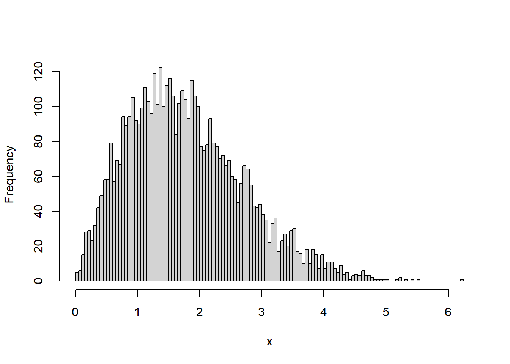
dweibull(x, shape, scale = 1, log = FALSE) 함수는 Weibull분포의 확률밀도함수이다. 형상모수 shape와 척도모수 scale의 Weibull분포에서 인자 x의 함수값을 구해 반환한다.
x <- seq(0, 7, by = 0.01)
# 확률밀도함수 시각화
plot(x, dweibull(x, shape = 2, scale = 2), type = "l", col = "red")
## [1] 0.2348533형상모수 shape와 척도모수 scale의 값에 따라 다양한 형태의 분포가 나온다. 형상모수의 값이 낮으면 오른쪽으로 치우친 곡선을, 높으면 왼쪽으로 치우친 곡선을 나타내며, 값이 3이면 정규분포에 가까운 곡선을 나타냅니다. 척도모수의 값이 크면 분포가 좁아지고, 반대로 값이 크면 분포가 넓어진다.
x <- seq(0, 5, by = 0.01)
plot(x, dweibull(x, shape = 5, scale = 2), type = "l", col = "red")
lines(x, dweibull(x, shape = 3, scale = 2), type = "l", col = "green")
lines(x, dweibull(x, shape = 2, scale = 2), type = "l", col = "blue")
lines(x, dweibull(x, shape = 1, scale = 2), type = "l", col = "purple")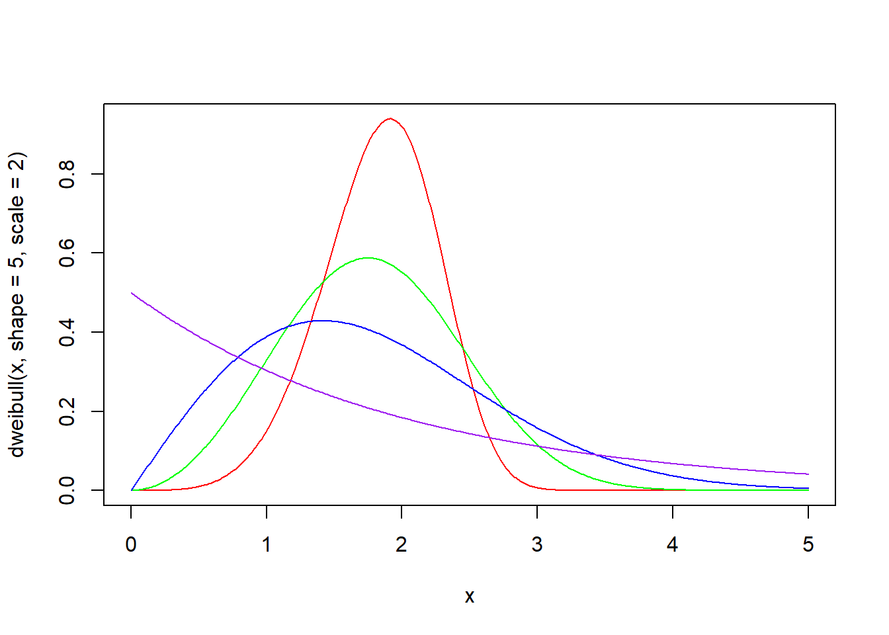
x <- seq(0, 5, by = 0.01)
plot(x, dweibull(x, shape = 3, scale = 1), type = "l", col = "red")
lines(x, dweibull(x, shape = 3, scale = 2), type = "l", col = "green")
lines(x, dweibull(x, shape = 3, scale = 3), type = "l", col = "blue")
lines(x, dweibull(x, shape = 3, scale = 4), type = "l", col = "purple")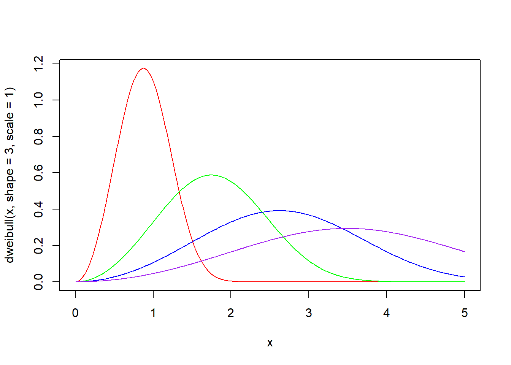
# 0에서 2까지의 면적은? pweibull(2, shape = 2, scale = 2)
x <- seq(0, 5, by = 0.01)
plot(x, dweibull(x, shape = 2, scale = 2), type = "l", lwd = 2, col = "red")
u <- seq(0, 2, by = 0.01)
v <- dweibull(u, shape = 2, scale = 2)
polygon(c(0, u, 2), c(0, v, 0), col = "pink")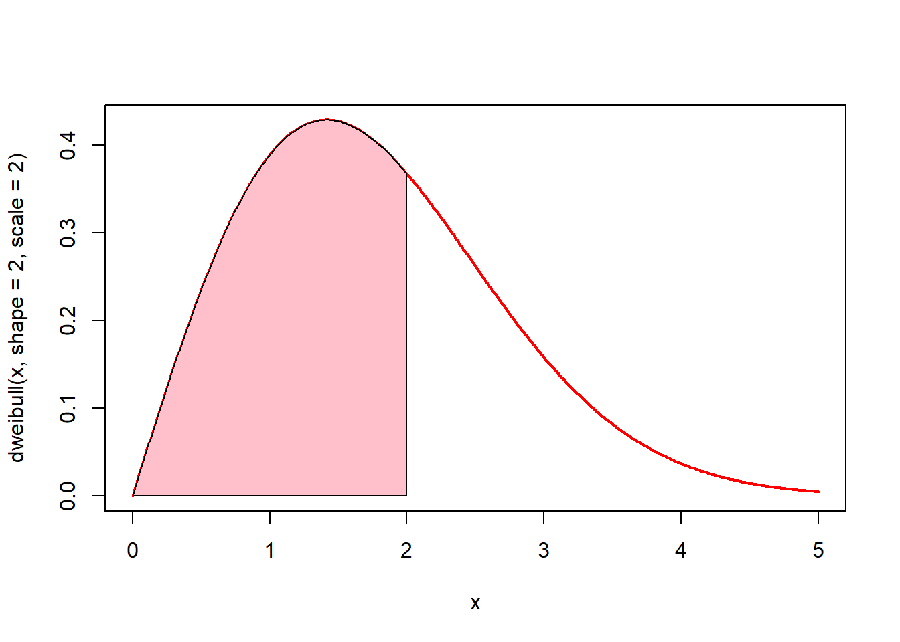
pweibull(q, shape, scale = 1, lower.tail = TRUE, log.p = FALSE) 함수는 Weibull분포의 누적분포함수이다. 형상모수 shape와 척도모수 scale의 Weibull분포에서 인자 q의 누적분포함수값 즉 확률을 구해 반환한다.
x <- seq(0, 5, by = 0.01)
# 누적분포함수 시각화
plot(x, pweibull(x, shape = 2, scale = 2), type = "l", col = "red")
## [1] 0.6321206qweibull(p, shape, scale = 1, lower.tail = TRUE, log.p = FALSE) 함수는 Weibull분포의 분위수를 구하는 함수이다. 형상모수 shape와 척도모수 scale의 Weibull분포에서 확률이 인자 p일 때의 분위수 값을 구해 반환한다.
## [1] 2.194514## [1] 0.69999546.1.10 로그정규분포(log-normal distribution)
로그정규뷴포는 확률변수에 로그를 취하게 되면 그 값이 정규분포를 따르는 확률분포이다. 모양은 Weibull분포와 유사하게 왼쪽이 볼록한 형태이다. 우리나라의 소득분포는 로그정규분포에 가깝게 나타난다. 즉 왼쪽 소득이 낮은 층의 비율이 높다고 볼 수 있다. 로그 정규 분포는 신뢰도 분석, 주식 변동의 모형화 등에 사용된다. 로그정규분포의 모양을 결정하는 것은 평균과 표준편차이다.
로그정규분포와 관련된 함수는 4가지가 있다.
- rlnorm(n, meanlog = 0, sdlog = 1)
- dlnorm(x, meanlog = 0, sdlog = 1, log = FALSE)
- plnorm(q, meanlog = 0, sdlog = 1, lower.tail = TRUE, log.p = FALSE)
- qlnorm(p, meanlog = 0, sdlog = 1, lower.tail = TRUE, log.p = FALSE)
위 함수에서 인자 meanlog는 평균, sdlog는 표준편차를 의미한다.
rlnorm(n, meanlog = 0, sdlog = 1) 함수는 주어진 평균 meanlog(기본값 0)과 표준편차 sdlog(기본값 1)의 로그정규분포에서 n개의 난수를 생성하여 반환한다. rlnorm 함수명은 난수를 의미하는 r과 로그정규분포를 의미하는 lnorm이 결합되어진 것이다.
## [1] 0.5709374 0.7943926 4.7526783 1.0730536 1.1380175 5.5570366 1.5855260
## [8] 0.2822220 0.5031571 0.6404002
dlnorm(x, meanlog = 0, sdlog = 1, log = FALSE) 함수는 로그정규분포의 확률밀도함수이다. 평균 meanlog(기본값 0)과 표준편차 sdlog(기본값 1)의 로그정규분포에서 인자 x의 함수값을 구해 반환한다.
x <- seq(0, 10, by = 0.01)
# 확률밀도함수 시각화
plot(x, dlnorm(x, meanlog = 0, sdlog = 1), type = "l", col = "red")
## [1] 0.6274961x <- seq(0, 5, by = 0.01)
plot(x, dlnorm(x, meanlog = 0, sdlog = 1), type = "l", col = "red")
lines(x, dlnorm(x, meanlog = 0.3, sdlog = 1), type = "l", col = "green")
lines(x, dlnorm(x, meanlog = 0.6, sdlog = 1), type = "l", col = "blue")
lines(x, dlnorm(x, meanlog = 1, sdlog = 1), type = "l", col = "purple")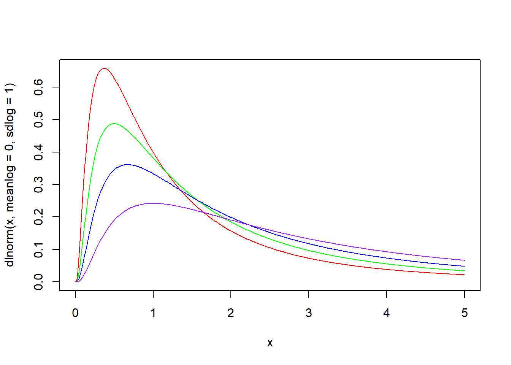
x <- seq(0, 5, by = 0.01)
plot(x, dlnorm(x, meanlog = 0, sdlog = 2), type = "l", col = "red")
lines(x, dlnorm(x, meanlog = 0, sdlog = 1.7), type = "l", col = "green")
lines(x, dlnorm(x, meanlog = 0, sdlog = 1.4), type = "l", col = "blue")
lines(x, dlnorm(x, meanlog = 0, sdlog = 1), type = "l", col = "purple")
# 0에서 2까지의 면적은? plnorm(2, meanlog = 0, sdlog = 1)
x <- seq(0, 5, by = 0.01)
plot(x, dlnorm(x, meanlog = 0, sdlog = 1), type = "l", lwd = 2, col = "red")
u <- seq(0, 2, by = 0.01)
v <- dlnorm(u, meanlog = 0, sdlog = 1)
polygon(c(0, u, 2), c(0, v, 0), col = "pink")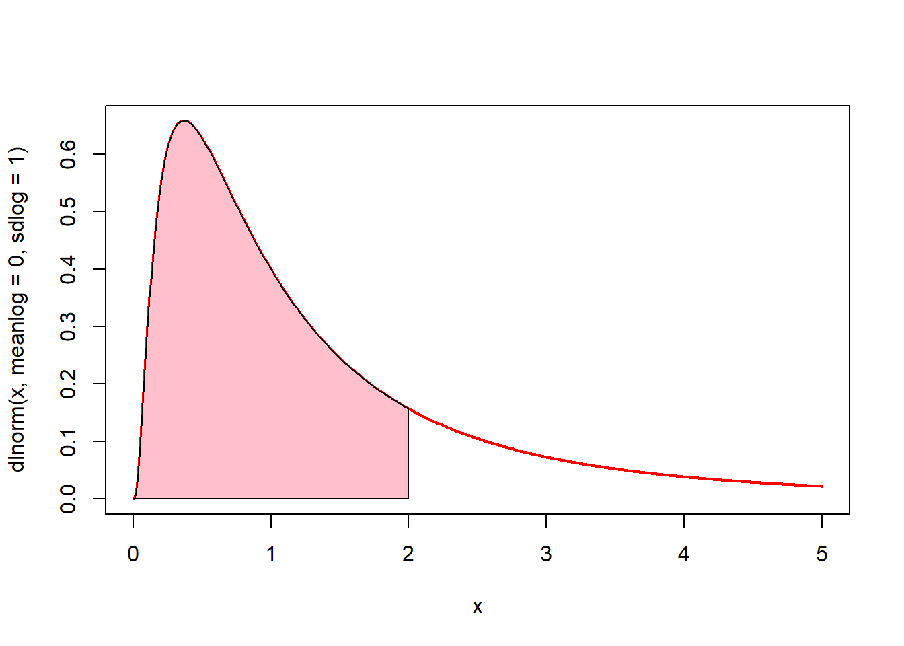
plnorm(q, meanlog = 0, sdlog = 1, lower.tail = TRUE, log.p = FALSE) 함수는 로그정규분포의 누적분포함수이다. 평균 meanlog(기본값 0)과 표준편차 sdlog(기본값 1)의 로그정규분포에서 인자 q의 누적분포함수값 즉 확률을 구해 반환한다.
x <- seq(0, 5, by = 0.01)
# 누적분포함수 시각화
plot(x, plnorm(x, meanlog = 0, sdlog = 1), type = "l", col = "red")
## [1] 0.7558914qlnorm(p, meanlog = 0, sdlog = 1, lower.tail = TRUE, log.p = FALSE) 함수는 로그정규분포의 분위수를 구하는 함수이다. 평균 meanlog(기본값 0)과 표준편차 sdlog(기본값 1)의 로그정규분포에서 확률이 인자 p일 때의 분위수 값을 구해 반환한다.
## [1] 1.689446## [1] 0.69999066.1.11 코시분포(Cauchy distribution)
코시분포는 기대값과 분산이 모두 정의되지 않은 연속확률분포이다. 로렌즈(Lorentz) 분포로 불리우기도 한다. 코시분포는 정규분포와 유사하게 종 모양이다. 그러나 코시분포는 정규분포보다 꼬리가 0에 더 느리게 접근한다. 코시분포의 이름은 프랑스 수학자 Augustin Cauchy에게서 유래한다.
코시분포의 모양은 위치(location)와 척도(scale)라는 두 모수에 의해 결정이 된다. 코시분포와 관련된 함수는 4가지가 있다.
- rcauchy(n, location = 0, scale = 1)
- dcauchy(x, location = 0, scale = 1, log = FALSE)
- pcauchy(q, location = 0, scale = 1, lower.tail = TRUE, log.p = FALSE)
- qcauchy(p, location = 0, scale = 1, lower.tail = TRUE, log.p = FALSE)
위 함수에서 각 인자의 의미는 다음과 같습니다.
- location : 위치
- scale : 척도
- n : 난수를 발생할 개수
- x, q : 확률밀도함수나 누적분포함수를 계산할 값(벡터)
- p : 분위수를 계산할 확률값
rcauchy(n, location = 0, scale = 1) 함수는 위치 location과 척도 scale로 구성된 코시분포에서 n개의 난수를 생성하여 반환한다. rcauchy 함수명은 난수를 의미하는 r과 코시분포를 의미하는 cauchy가 결합되어진 것이다.
## [1] 1.2691296 -0.7842432 3.4011811 -0.3850032 -0.1892392 0.1441052
## [7] -11.2960947 -0.3514607 -6.1346270 7.2913309
dcauchy(x, location = 0, scale = 1, log = FALSE) 함수는 코시분포의 확률밀도함수이다. 위치 location과 척도 scale로 구성된 코시분포에서 인자 x의 함수값을 구해 반환한다.
x <- seq(-10, 10)
# 확률밀도함수 시각화
plot(x, dcauchy(x, location = 0, scale = 1), type = "l", col = "red")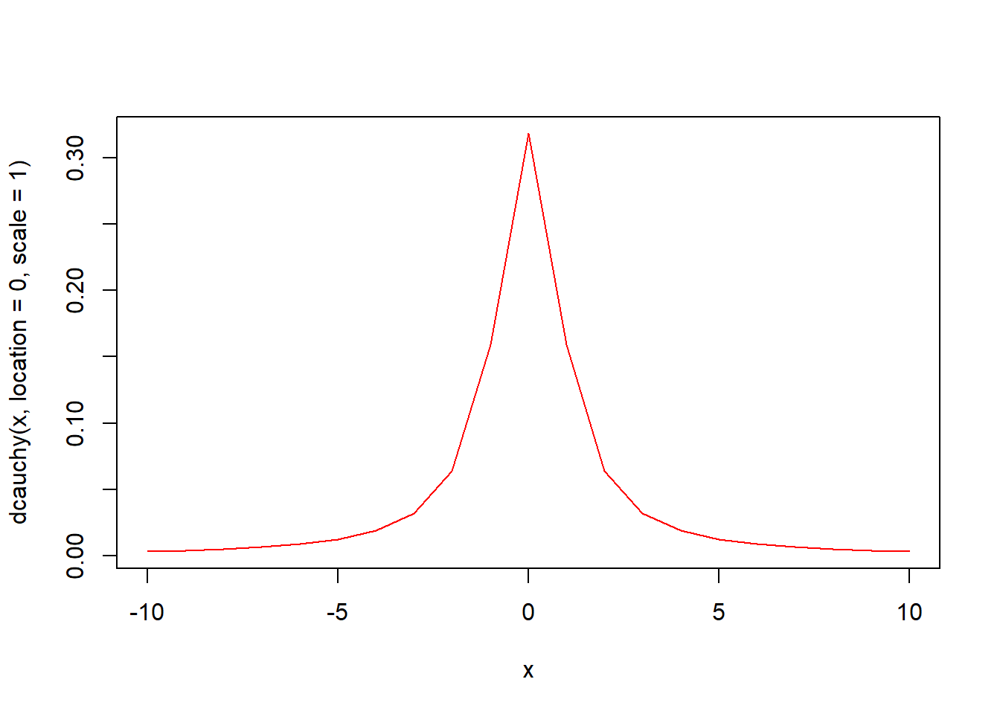
## [1] 0.06366198x <- seq(-10, 10)
plot(x, dcauchy(x, location = 0, scale = 0.5), type = "l", col = "red")
lines(x, dcauchy(x, location = 0, scale = 1), type = "l", col = "green")
lines(x, dcauchy(x, location = 0, scale = 1.5), type = "l", col = "blue")
lines(x, dcauchy(x, location = 0, scale = 2), type = "l", col = "purple")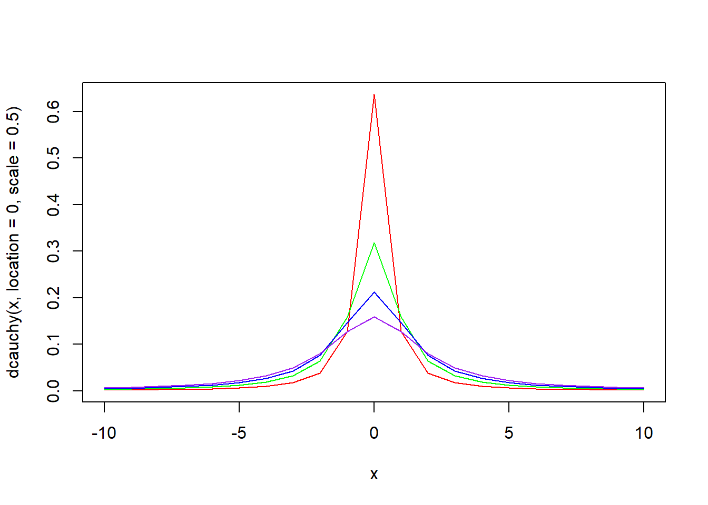
x <- seq(-10, 10)
plot(x, dcauchy(x, location = -2, scale = 1), type = "l", col = "red")
lines(x, dcauchy(x, location = 0, scale = 1), type = "l", col = "green")
lines(x, dcauchy(x, location = 2, scale = 1), type = "l", col = "blue")
lines(x, dcauchy(x, location = 4, scale = 1), type = "l", col = "purple")
# 0에서 3까지의 면적은? pcauchy(3, location = 0, scale = 1)
x <- seq(-10, 10)
plot(x, dcauchy(x, location = 0, scale = 1), type = "l", lwd = 2, col = "red")
u <- seq(-10, 3)
v <- dcauchy(u, location = 0, scale = 1)
polygon(c(-10, u, 3), c(0, v, 0), col = "pink")
pcauchy(q, location = 0, scale = 1, lower.tail = TRUE, log.p = FALSE) 함수는 코시분포의 누적분포함수이다. 위치 location과 척도 scale로 구성된 코시분포에서 인자 q의 누적분포함수값 즉 확률을 구해 반환한다.
x <- seq(-10, 10)
# 누적분포함수 시각화
plot(x, pcauchy(x, location = 0, scale = 1), type = "l", col = "red")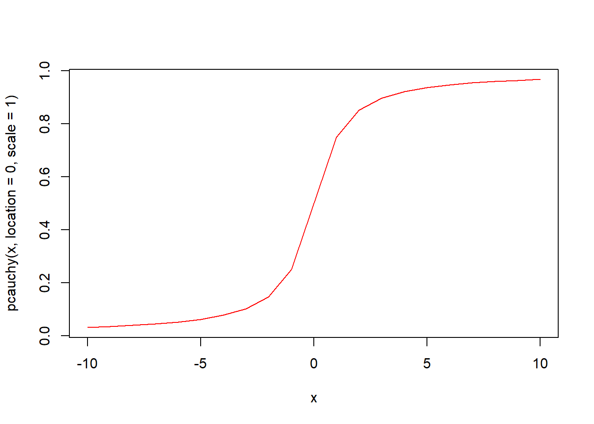
## [1] 0.8975836qcauchy(p, location = 0, scale = 1, lower.tail = TRUE, log.p = FALSE) 함수는 코시분포의 분위수를 구하는 함수이다. 위치 location과 척도 scale로 구성된 코시분포에서 확률이 인자 p일 때의 분위수 값을 구해 반환한다.
## [1] 1.376382## [1] 0.7992966.2 이산형 확률분포
6.2.1 이항분포(binomial distribution)
이산형 확률분포에는 이항분포, 베르누이분포, 다항분포, 초기하분포, 기하분포, 음이항분포, 포아송분포 등이 있다.
이항분포는 시행결과가 오직 2개인 베르누이 시행을 여러번 반복하였을 때 나타나는 확률분포이다. 시행결과가 오직 2개인 경우의 예로는 성공과 실패, 0과 1, 동전의 앞면과 뒷면 등을 들 수 있다. 만일 여기서 시행횟수가 1번이면 베르누이분포가 된다. 이항분포의 모양을 결정하는 것은 시행횟수와 성공확률이다.
이항분포와 관련된 함수는 4가지가 있다.
- rbinom(n, size, prob)
- dbinom(x, size, prob, log = FALSE)
- pbinom(q, size, prob, lower.tail = TRUE, log.p = FALSE)
- qbinom(p, size, prob, lower.tail = TRUE, log.p = FALSE)
위 함수에서 인자 size는 시행횟수, prob는 각 시행에서의 성공확률을 의미한다.
rbinom(n, size, prob) 함수는 시행횟수 size와 성공확률 prob의 이항분포에서 n개의 난수를 생성하여 반환한다. rbinom 함수명은 난수를 의미하는 r과 이항분포를 의미하는 binom이 결합되어진 것이다.
## [1] 2 3 2 4 4 1 3 4 3 2
dbinom(x, size, prob, log = FALSE) 함수는 이항분포의 확률밀도함수이다. 시행횟수 size와 성공확률 prob의 이항분포에서 인자 x의 함수값을 구해 반환한다.
x <- seq(0, 30, by = 1)
prob <- dbinom(x, size=30, prob=0.5)
names(prob) <- x
# 확률밀도함수 시각화
barplot(prob)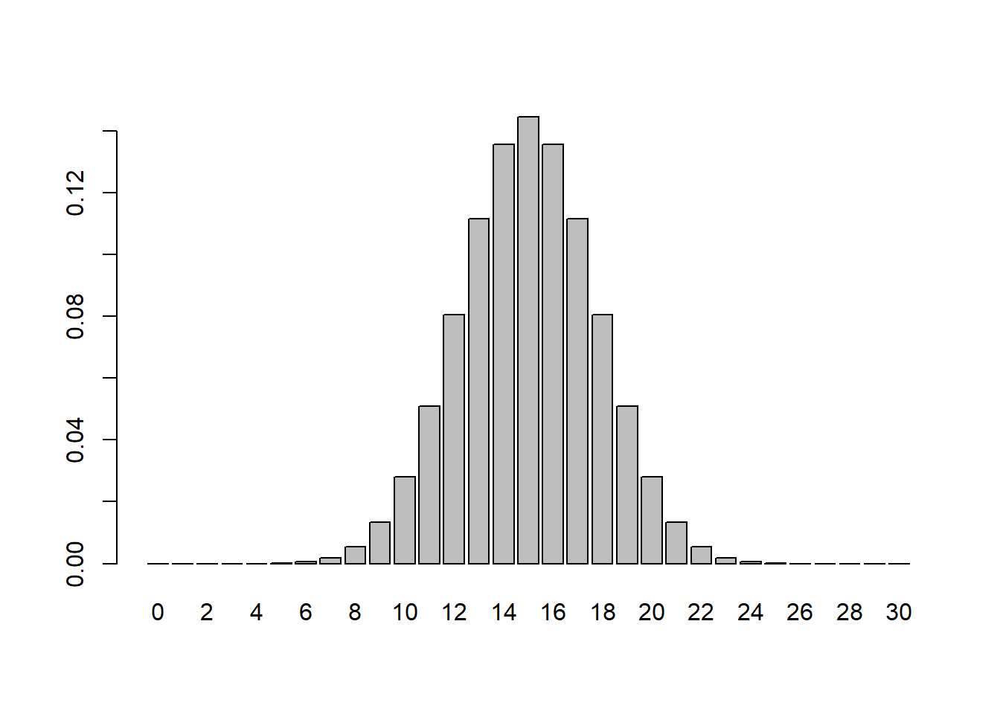
## [1] 0.0279816x <- seq(0, 30)
plot(x, dbinom(x, size = 30, prob = 0.2), type = "l", col = "red")
lines(x, dbinom(x, size = 30, prob = 0.3), type = "l", col = "green")
lines(x, dbinom(x, size = 30, prob = 0.6), type = "l", col = "blue")
lines(x, dbinom(x, size = 30, prob = 0.8), type = "l", col = "purple")
x <- seq(0, 30)
plot(x, dbinom(x, size = 10, prob = 0.5), type = "l", col = "red")
lines(x, dbinom(x, size = 20, prob = 0.5), type = "l", col = "green")
lines(x, dbinom(x, size = 30, prob = 0.5), type = "l", col = "blue")
lines(x, dbinom(x, size = 40, prob = 0.5), type = "l", col = "purple")
# 0에서 20까지의 확률은? pbinom(20, size = 30, prob = 0.5)
x <- seq(0, 30)
prob <- dbinom(x, size=30, prob=0.5)
names(prob) <- x
barplot(prob,x, col=c(rep("pink",21),rep("grey",10)))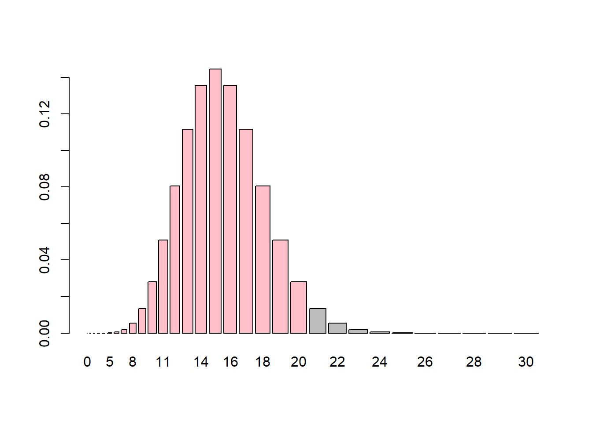
plnorm(q, meanlog = 0, sdlog = 1, lower.tail = TRUE, log.p = FALSE) 함수는 이항분포의 누적분포함수이다. 시행횟수 size와 성공확률 prob의 이항분포에서 인자 q의 누적분포함수값 즉 확률을 구해 반환한다.
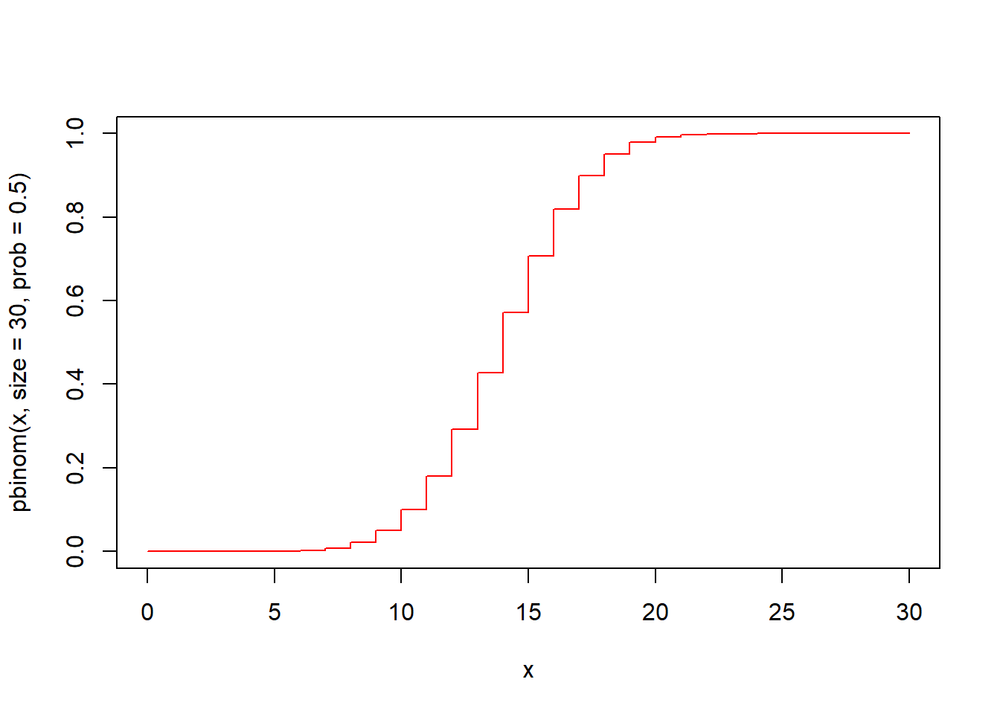
## [1] 0.978613qlnorm(p, meanlog = 0, sdlog = 1, lower.tail = TRUE, log.p = FALSE) 함수는 이항분포의 분위수를 구하는 함수이다. 시행횟수 size와 성공확률 prob의 이항분포에서 확률이 인자 p일 때의 분위수 값을 구해 반환한다.
## [1] 16## [1] 0.70766766.2.2 베르누이분포(Bernoulli distribution)
베르누이분포는 시행의 결과가 오직 두 가지인 경우에 1회 시행하여 일어난 확률분포이다. 이항분포의 특수한 사례라고 할 수 있다. 시행결과가 오직 2개(베르누이 시행)인 경우의 예로는 성공과 실패, 0과 1, 앞면과 뒷면 등을 들 수 있다. 베르누이분포는 스위스의 수학자 야코프 베르누이(Jakob Bernoulli)의 이름에서 그 명칭을 따왔습니다.
R에서 베르누이분포를 위한 별도의 함수는 없고 이항분포함수에서 시행횟수를 지정하는 인자 size를 1로 설정한다. 그 이유는 베르누이분포는 시행 횟수가 1인 이항분포이기 때문이다.
## [1] 0 1 0 1 1 0 1 1 1 0## [1] 1 1 1 0 1 0 1 0 0 0
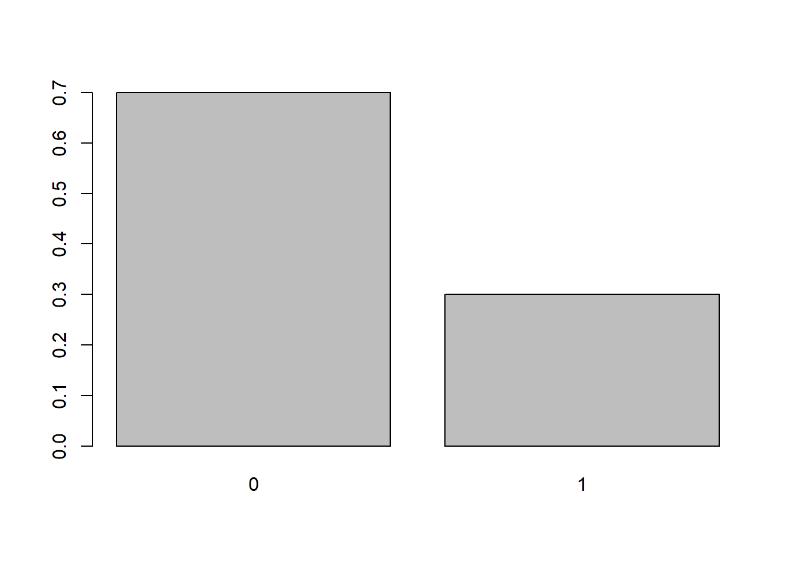
## [1] 0.36.2.3 다항분포(multinomial distribution)
다항분포는 시행결과가 여러 개의 값을 가질 때 나타나는 확률분포이다. 다항분포 중에서 시행 결과가 오직 2개인 경우가 이항분포가 된다. 보통은 시행결과가 3개 이상일 때 다항분포를 적용한다.
다항분포와 관련된 함수는 2가지가 있다.
- rmultinom(n, size, prob)
- dmultinom(x, size = NULL, prob, log = FALSE)
위 함수에서 인자 size는 시행횟수, prob는 각 시행에서의 성공확률을 의미한다.
rmultinom(n, size, prob) 함수는 시행횟수 size와 성공확률 prob의 다항분포에서 n개의 난수를 생성하여 반환한다. 이때 성공확률 prob는 3개 이상으로 구성된 벡터이고, 이 성공확률들의 합은 내부적으로 1이 되도록 표준화된다. rmultinom 함수명은 난수를 의미하는 r과 다항분포를 의미하는 multinom이 결합되어진 것이다.
## [,1] [,2] [,3] [,4] [,5] [,6] [,7] [,8] [,9] [,10]
## [1,] 1 2 4 2 2 4 2 0 1 1
## [2,] 5 5 0 5 3 2 3 6 1 6
## [3,] 4 3 6 3 5 4 5 4 8 3## [,1] [,2] [,3] [,4] [,5] [,6] [,7] [,8] [,9] [,10]
## [1,] 2 4 1 0 1 1 0 1 0 1
## [2,] 4 3 3 6 4 4 2 3 1 2
## [3,] 6 6 5 8 2 4 5 5 6 9
## [4,] 8 7 11 6 13 11 13 11 13 8##
## 0 1 2 3 4 5 6 7 8 9 11 12 13 15
## 4 6 5 3 5 1 1 2 5 3 1 2 1 1set.seed(123)
x <- rmultinom(n = 5000, size = 10, prob = c(0.2, 0.5, 0.3))
# 각 항목별 시행결과 평균 그래프
barplot(colMeans(t(x)), names.arg = c("0.2", "0.5", "0.3"))
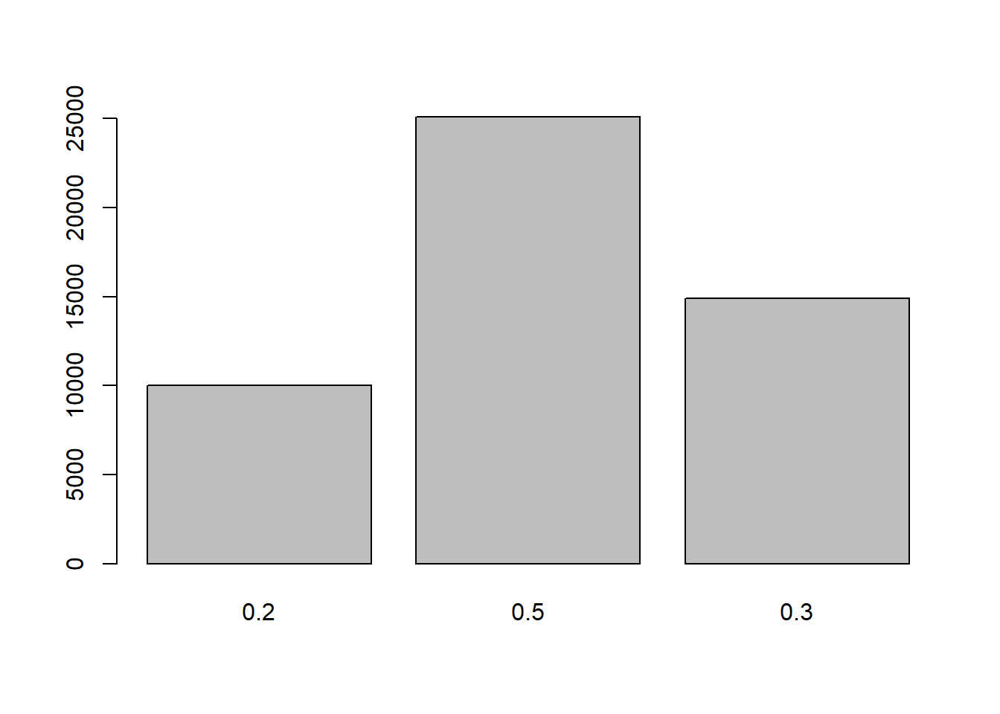

dmultinom(x, size = NULL, prob, log = FALSE) 함수는 다항분포의 확률밀도함수이다. 성공확률 prob의 다항분포에서 인자 x의 함수값을 구해 반환한다.
# 어느 지역 국회의원 선거 여론조사에서 유권자 40%는 A후보, 10%는 B후보를
# 선호하였고, 50%는 무응답이었습니다. 만일 10명의 유권자를 무작위로 추출하였을 때
# 이들 중 3명은 A후보, 2명은 B후보, 5명은 무응답을 할 확률은?
dmultinom(c(3, 2, 5), size = 10, prob = c(0.4, 0.1, 0.5))## [1] 0.05046.2.4 초기하분포(hyper-geometric distribution)
초기하분포는 N개가 들어있는 모집단에서 k개의 표본을 비복원으로 추출할 때 원하는 것이 추출될 확률의 분포이다. 이항분포에서는 복원추출을 하였지만, 이를 비복원으로 추출하면 초기하분포가 된다.
초기하분포와 관련된 함수는 4가지가 있다.
- rhyper(nn, m, n, k)
- dhyper(x, m, n, k, log = FALSE)
- phyper(q, m, n, k, lower.tail = TRUE, log.p = FALSE)
- qhyper(p, m, n, k, lower.tail = TRUE, log.p = FALSE)
위 함수에서 각 인자의 의미는 다음과 같습니다.
- m : 주머니 속의 흰색공의 개수
- n : 주머니 속의 검은색공의 개수
- k : 주머니 속에서 비복원으로 추출하는 공의 개수
- nn : 난수를 발생할 개수
- x, q : 확률밀도함수나 누적분포함수를 계산할 값(벡터)
- p : 분위수를 계산할 확률값
rhyper(nn, m, n, k) 함수는 m과 n의 개체로 구성되어 있는 모집단에서 k개의 표본을 추출하는 초기하분포에서 nn개의 난수를 생성하여 반환한다. rhyper 함수명은 난수를 의미하는 r과 초기하분포를 의미하는 hyper가 결합되어진 것이다.
## [1] 1 2 1 3 3 0 2 3 2 2
dhyper(x, m, n, k, log = FALSE) 함수는 초기하분포의 확률밀도함수이다. m과 n의 개체로 구성되어 있는 모집단에서 k개의 표본을 추출하는 초기하분포에서 인자 x의 함수값을 구해 반환한다.
x <- seq(0, 10)
prob <- dhyper(x, m = 10, n = 20, k = 5)
names(prob) <- x
# 확률밀도함수 시각화
barplot(prob)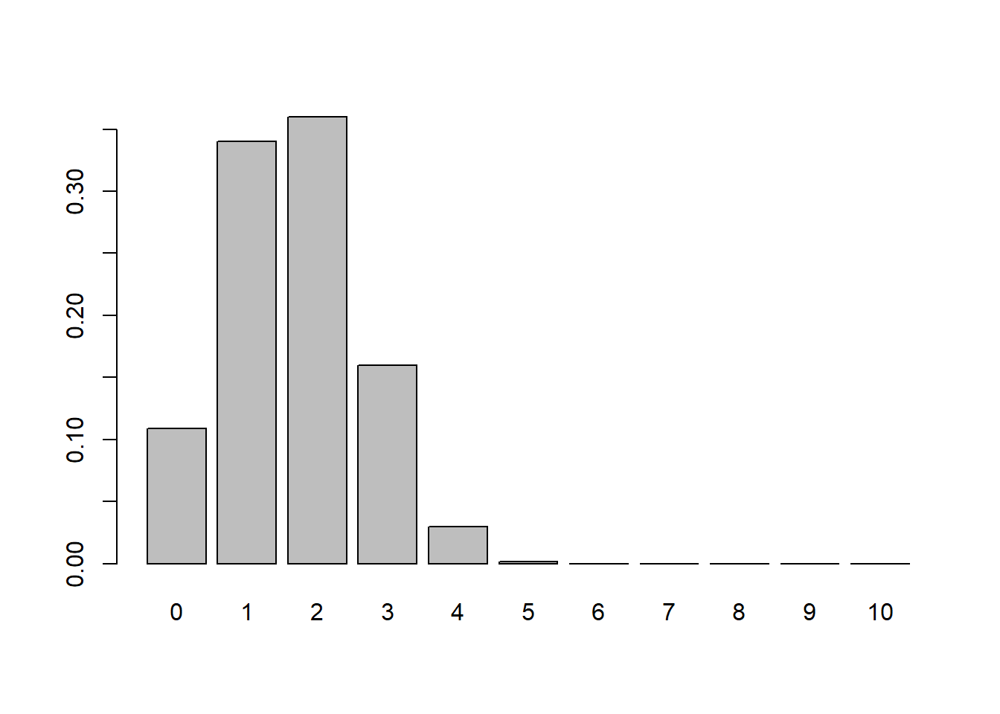
## [1] 0.3599848x <- seq(0, 10)
plot(x, dhyper(x, m = 10, n = 20, k = 5), type = "l", col = "red")
lines(x, dhyper(x, m = 20, n = 20, k = 5), type = "l", col = "green")
lines(x, dhyper(x, m = 30, n = 20, k = 5), type = "l", col = "blue")
lines(x, dhyper(x, m = 50, n = 20, k = 5), type = "l", col = "purple")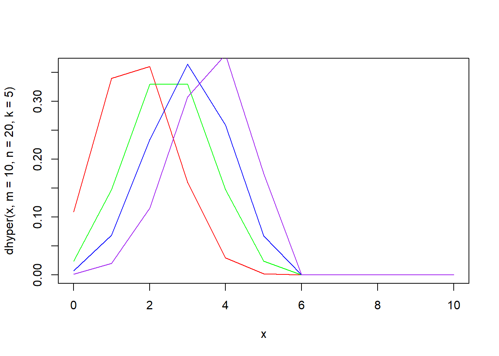
x <- seq(0, 10)
plot(x, dhyper(x, m = 10, n = 30, k = 5), type = "l", col = "red")
lines(x, dhyper(x, m = 10, n = 20, k = 5), type = "l", col = "green")
lines(x, dhyper(x, m = 10, n = 10, k = 5), type = "l", col = "blue")
lines(x, dhyper(x, m = 10, n = 5, k = 5), type = "l", col = "purple")
x <- seq(0, 10)
plot(x, dhyper(x, m = 10, n = 20, k = 2), type = "l", col = "red")
lines(x, dhyper(x, m = 10, n = 20, k = 5), type = "l", col = "green")
lines(x, dhyper(x, m = 10, n = 20, k = 10), type = "l", col = "blue")
lines(x, dhyper(x, m = 10, n = 20, k = 15), type = "l", col = "purple")
초기하분포의 모집단의 크기가 크면 이항분포와 유사한 결과를 보여준다.
x <- seq(0, 10)
plot(x, dhyper(x, m = 10, n = 10, k = 5), type = "l", col = "black")
lines(x, dhyper(x, m = 200, n = 200, k = 5), type = "l", col = "red")
lines(x, dbinom(x, size = 5, prob = 0.5), type = "p", col = "blue")
# 0에서 3까지의 확률은? phyper(3, m = 10, n = 10, k = 5)
x <- seq(0, 10)
prob <- dhyper(x, m = 10, n = 20, k = 5)
names(prob) <- x
barplot(prob,col=c(rep("pink",4),rep("grey",10)))phyper(q, m, n, k, lower.tail = TRUE, log.p = FALSE) 함수는 초기하분포의 누적분포함수이다. m과 n의 개체로 구성되어 있는 모집단에서 k개의 표본을 추출하는 초기하분포에서 인자 q의 누적분포함수값 즉 확률을 구해 반환한다.
## [1] 0.8482972qhyper(p, m, n, k, lower.tail = TRUE, log.p = FALSE) 함수는 초기하분포의 분위수를 구하는 함수이다. m과 n의 개체로 구성되어 있는 모집단에서 k개의 표본을 추출하는 초기하분포에서 확률이 인자 p일 때의 분위수 값을 구해 반환한다.
## [1] 2## [1] 0.56.2.5 기하 분포(geometric distribution)
기하분포는 베르누이 시행에서 처음 성공까지 시도한 횟수의 확률분포이다.
기하분포와 관련된 함수는 4가지가 있다.
- rgeom(n, prob)
- dgeom(x, prob, log = FALSE)
- pgeom(q, prob, lower.tail = TRUE, log.p = FALSE)
- qgeom(p, prob, lower.tail = TRUE, log.p = FALSE)
위 함수에서 각 인자의 의미는 다음과 같다.
- prob : 각각의 시행에서 성공할 확률
- n : 난수를 발생할 개수
- x, q : 확률밀도함수나 누적분포함수를 계산할 값(벡터), 첫번째 성공까지 실패한 횟수
- p : 분위수를 계산할 확률값
rgeom(n, prob) 함수는 확률 prob의 기하분포에서 n개의 난수를 생성하여 반환한다. rgeom 함수명은 난수를 의미하는 r과 기하분포를 의미하는 geom이 결합되어진 것이다.
## [1] 1 3 0 0 0 5 3 0 0 0dhyper(x, m, n, k, log = FALSE) 함수는 기하분포의 확률밀도함수이다. 확률 prob의 기하분포에서 인자 x의 함수값을 구해 반환한다.
## [1] 0.125x <- seq(0, 10)
plot(x, dgeom(x, prob = 0.7), type = "l", col = "red")
lines(x, dgeom(x, prob = 0.5), type = "l", col = "green")
lines(x, dgeom(x, prob = 0.2), type = "l", col = "blue")# 0에서 3까지의 확률은? pgeom(3, prob = 0.5)
x <- seq(0, 10)
prob <- dgeom(x, prob = 0.5)
names(prob) <- x
barplot(prob,col=c(rep("pink",4),rep("grey",10)))pgeom(q, prob, lower.tail = TRUE, log.p = FALSE) 함수는 기하분포의 누적분포함수이다. 확률 prob의 기하분포에서 인자 q의 누적분포함수값 즉 확률을 구해 반환한다.
## [1] 0.9375qgeom(p, prob, lower.tail = TRUE, log.p = FALSE) 함수는 기하분포의 분위수를 구하는 함수이다. 확률 prob의 기하분포에서 확률이 인자 p일 때의 분위수 값을 구해 반환한다.
## [1] 1## [1] 0.756.2.6 음이항 분포(negative-binomial distribution)
음이항분포는 기하분포를 일반화시킨 것이다. 기하분포가 베르누이 시행에서 처음 성공까지 시도한 횟수의 확률분포라면, 음이항분포는 베르누이 시행에서 r번째 성공까지 시도한 횟수의 확률분포이다. 예를 들면 동전의 앞면이 다섯 번 나올 때까지 동전을 던져야 하는 횟수의 분포, 조립 라인에서 생산되는 제품에 대해 100개의 불량품이 생산되기 전까지 조립되는 단위의 수 분포 등을 들 수 있다.
음이항분포와 관련된 함수는 4가지가 있다.
- rnbinom(n, size, prob, mu)
- dnbinom(x, size, prob, mu, log = FALSE)
- pnbinom(q, size, prob, mu, lower.tail = TRUE, log.p = FALSE)
- qnbinom(p, size, prob, mu, lower.tail = TRUE, log.p = FALSE)
위 함수에서 각 인자의 의미는 다음과 같다.
- size : 성공횟수
- prob : 성공확률
- mu : 음이항분포의 평균
- x, q : 확률밀도함수나 누적분포함수를 계산할 값(벡터)
- p : 분위수를 계산할 확률값
rnbinom(n, size, prob, mu) 함수는 성공횟수 size와 성공확률 prob로 구성된 음이항분포에서 n개의 난수를 생성하여 반환한다. rnbinom 함수명은 난수를 의미하는 r과 음이항분포를 의미하는 nbinom가 결합되어진 것이다.
## [1] 6 8 7 10 8 6 8 13 3 10
dnbinom(x, size, prob, mu, log = FALSE) 함수는 음이항분포의 확률밀도함수이다. 성공횟수 size와 성공확률 prob로 구성된 음이항분포에서인자 x의 함수값을 구해 반환한다.
x <- seq(0, 10)
prob <- dnbinom(x, size = 5, prob = 0.5)
names(prob) <- x
# 확률밀도함수 시각화
barplot(prob)## [1] 0.1171875x <- seq(0, 10)
plot(x, dnbinom(x, size = 1, prob = 0.5), type = "l", col = "red")
lines(x, dnbinom(x, size = 3, prob = 0.5), type = "l", col = "green")
lines(x, dnbinom(x, size = 5, prob = 0.5), type = "l", col = "blue")
lines(x, dnbinom(x, size = 7, prob = 0.5), type = "l", col = "purple")x <- seq(0, 10)
plot(x, dnbinom(x, size = 5, prob = 0.7), type = "l", col = "red")
lines(x, dnbinom(x, size = 5, prob = 0.5), type = "l", col = "green")
lines(x, dnbinom(x, size = 5, prob = 0.3), type = "l", col = "blue")
lines(x, dnbinom(x, size = 5, prob = 0.1), type = "l", col = "purple")
# 인자 prob 대신 평균 mu를 사용할 수 있음
# prob = size/(size+mu)
x <- seq(0, 10)
plot(x, dnbinom(x, size = 5, mu = 2), type = "l", col = "red")
lines(x, dnbinom(x, size = 5, mu = 3), type = "l", col = "green")
lines(x, dnbinom(x, size = 5, mu = 4), type = "l", col = "blue")
lines(x, dnbinom(x, size = 5, mu = 5), type = "l", col = "purple")
# 0에서 3까지의 확률은? pnbinom(3, size = 5, prob = 0.5)
x <- seq(0, 10)
prob <- dnbinom(x, size = 5, prob = 0.5)
names(prob) <- x
barplot(prob,col=c(rep("pink",4),rep("grey",10)))phyper(q, m, n, k, lower.tail = TRUE, log.p = FALSE) 함수는 음이항분포의 누적분포함수이다. 성공횟수 size와 성공확률 prob로 구성된 음이항분포에서 인자 q의 누적분포함수값 즉 확률을 구해 반환한다.
## [1] 0.3632813qnbinom(p, size, prob, mu, lower.tail = TRUE, log.p = FALSE) 함수는 음이항분포의 분위수를 구하는 함수이다. 성공횟수 size와 성공확률 prob로 구성된 음이항분포에서 확률이 인자 p일 때의 분위수 값을 구해 반환한다.
## [1] 2## [1] 0.22656256.2.7 포아송분포(Poisson distribution)
포아송분포는 단위시간, 단위공간에 어떤 사건이 몇 번 발생할 것인가를 표현하는 확률분포이다. 포아송 분포는 프랑스의 수학자이자 물리학자인 시메옹 드니 푸아송(Siméon Denis Poisson, 1781 ~ 1840)이 정립한 분포이다.
이항분포의 시행횟수가 매우 크고 발생확률이 매우 작으면 포아송분포와 유사해진다. 반대로 포아송분포의 람다(lambda)가 매우 커지면 정규분포와 유사해진다.
포아송분포의 모수인 lambda는 단위시간, 단위공간에서 어떤 사건이 발생한 평균횟수이다.
포아송분포와 관련된 함수는 4가지가 있다.
- rpois(n, lambda)
- dpois(x, lambda, log = FALSE)
- ppois(q, lambda, lower.tail = TRUE, log.p = FALSE)
- qpois(p, lambda, lower.tail = TRUE, log.p = FALSE)
위 함수에서 각 인자의 의미는 다음과 같다.
- lambda : 단위시간, 단위공간에서 어떤 사건이 발생한 평균횟수
- x, q : 확률밀도함수나 누적분포함수를 계산할 값(벡터)
- p : 분위수를 계산할 확률값
rpois(n, lambda) 함수는 모수 lambda인 포아송분포에서 n개의 난수를 생성하여 반환한다. rpois 함수명은 난수를 의미하는 r과 포아송분포를 의미하는 pois가 결합되어진 것이다.
## [1] 4 7 4 8 9 2 5 8 5 5
dpois(x, lambda, log = FALSE 함수는 포아송분포의 확률밀도함수이다. 모수 lambda인 포아송분포에서 인자 x의 함수값을 구해 반환한다.
## [1] 0.08422434x <- seq(0, 20)
plot(x, dpois(x, lambda = 1), type = "l", col = "red")
lines(x, dpois(x, lambda = 2), type = "l", col = "green")
lines(x, dpois(x, lambda = 5), type = "l", col = "blue")
lines(x, dpois(x, lambda = 10), type = "l", col = "purple")
# 0에서 3까지의 면적(핑크색)은? ppois(3, lambda = 5)
x <- seq(0, 10)
prob <- dpois(x, lambda = 5)
names(prob) <- x
barplot(prob,col=c(rep("pink",4),rep("grey",10)))ppois(q, lambda, lower.tail = TRUE, log.p = FALSE) 함수는 포아송분포의 누적분포함수이다. 모수 lambda인 포아송분포에서 인자 q의 누적분포함수값 즉 확률을 구해 반환한다.

## [1] 0.2650259qpois(p, lambda, lower.tail = TRUE, log.p = FALS 함수는 포아송분포의 분위수를 구하는 함수이다. 모수 lambda인 포아송분포에서 확률이 인자 p일 때의 분위수 값을 구해 반환한다.
## [1] 3## [1] 0.26502596.2.8 윌콕슨 순위합 분포(Wilcoxon rank sum distribution)
윌콕슨 순위합 통계량(Wilcoxon Rank Sum Statistic) 분포는 윌콕슨 순위합 검정에 주로 사용된다. 두 모집단의 중심 차이를 검정할 때 정규분포이면 t검정을 수행한다. 그러나 정규분포가 아니면 비모수 검정을 수행하는데 대표적인 비모수검정으로 윌콕슨 순위합 검정과 윌콕슨 부호순위 검정이 있다. 윌콕슨 순위합 검정은 독립적인 두 모집단을 비교할 때, 윌콕슨 부호순위 검정은 동일한 집단의 사전과 사후를 비교할 때 주로 사용된다.
윌콕슨 순위합 통계량 분포와 관련된 함수는 4가지가 있다.
- rwilcox(nn, m, n)
- dwilcox(x, m, n, log = FALSE)
- pwilcox(q, m, n, lower.tail = TRUE, log.p = FALSE)
- qwilcox(p, m, n, lower.tail = TRUE, log.p = FALSE)
위 함수에서 각 인자의 의미는 다음과 같다.
- m : 첫번째 표본의 개수
- n : 두번째 표본의 개수
- nn : 난수를 발생할 개수
- x, q : 확률밀도함수나 누적분포함수를 계산할 값(벡터)
- p : 분위수를 계산할 확률값
rwilcox(nn, m, n) 함수는 첫번째 표본 m개와 두번째 표본 n개로 구성되어 있는 윌콕슨 순위합 통계량 분포에서 nn개의 난수를 생성하여 반환한다. rwilcox 함수명은 난수를 의미하는 r과 윌콕슨 순위합 통계량 분포를 의미하는 wilcox가 결합되어진 것이다.
## [1] 806 700 678 938 813 776 704 824 771 765
dwilcox(x, m, n, log = FALSE) 함수는 윌콕슨 순위합 통계량 분포의 확률밀도함수이다. 첫번째 표본 m개와 두번째 표본 n개로 구성되어 있는 윌콕슨 순위합 통계량 분포에서 인자 x의 함수값을 구해 반환한다.
## [1] 0.004487415x <- seq(0, 1000)
plot(x, dwilcox(x, m = 10, n = 30), type = "l", col = "red")
lines(x, dwilcox(x, m = 20, n = 30), type = "l", col = "green")
lines(x, dwilcox(x, m = 30, n = 30), type = "l", col = "blue")
lines(x, dwilcox(x, m = 40, n = 30), type = "l", col = "purple")x <- seq(0, 1000)
plot(x, dwilcox(x, m = 30, n = 10), type = "l", col = "red")
lines(x, dwilcox(x, m = 30, n = 20), type = "l", col = "green")
lines(x, dwilcox(x, m = 30, n = 30), type = "l", col = "blue")
lines(x, dwilcox(x, m = 30, n = 40), type = "l", col = "purple")x <- seq(0, 1000)
plot(x, dwilcox(x, m = 10, n = 10), type = "l", col = "red")
lines(x, dwilcox(x, m = 20, n = 20), type = "l", col = "green")
lines(x, dwilcox(x, m = 30, n = 30), type = "l", col = "blue")
lines(x, dwilcox(x, m = 40, n = 40), type = "l", col = "purple")
# 0에서 3까지의 확률은? pwilcox(500, m = 30, n = 30)
x <- seq(0, 1000)
plot(x, dwilcox(x, m = 30, n = 30), type = "l", lwd = 2, col = "red")
u <- seq(0, 500)
v <- dwilcox(u, m = 30, n = 30)
polygon(c(0, u, 500), c(0, v, 0), col = "pink")
pwilcox(q, m, n, lower.tail = TRUE, log.p = FALSE) 함수는 윌콕슨 순위합 통계량 분포의 누적분포함수이다. 첫번째 표본 m개와 두번째 표본 n개로 구성되어 있는 윌콕슨 순위합 통계량 분포에서 인자 q의 누적분포함수값 즉 확률을 구해 반환한다.

## [1] 0.7709544qwilcox(q, m, n, lower.tail = TRUE, log.p = FALSE) 함수는 윌콕슨 순위합 통계량 분포의 분위수를 구하는 함수이다. 첫번째 표본 m개와 두번째 표본 n개로 구성되어 있는 윌콕슨 순위합 통계량 분포에서 확률이 인자 p일 때의 분위수 값을 구해 반환한다.
## [1] 486## [1] 0.70399926.2.9 윌콕슨 부호순위 분포(Wilcoxon signed rank distribution)
윌콕슨 부호순위 통계량(Wilcoxon Signed Rank Statistic) 분포는 윌콕슨 부호순위 검정에 주로 사용된다. 두 모집단의 중심 차이를 검정할 때 정규분포이면 t검정을 수행한다. 그러나 정규분포가 아니면 비모수 검정을 수행하는데 대표적인 비모수검정으로 윌콕슨 순위합 검정과 윌콕슨 부호순위 검정이 있다. 윌콕슨 순위합 검정은 독립적인 두 모집단을 비교할 때, 윌콕슨 부호순위 검정은 동일한 집단의 사전과 사후를 비교할 때 주로 사용된다.
윌콕슨 부호순위 통계량 분포와 관련된 함수는 4가지가 있다.
- rsignrank(nn, n)
- dsignrank(x, n, log = FALSE)
- psignrank(q, n, lower.tail = TRUE, log.p = FALSE)
- qsignrank(p, n, lower.tail = TRUE, log.p = FALSE)
위 함수에서 각 인자의 의미는 다음과 같다.
- n : 표본의 개수
- nn : 난수를 발생할 개수
- x, q : 확률밀도함수나 누적분포함수를 계산할 값(벡터)
- p : 분위수를 계산할 확률값
rsignrank(nn, n) 함수는 표본 n개로 구성되어 있는 윌콕슨 부호순위 통계량 분포에서 nn개의 난수를 생성하여 반환한다. rsignrank 함수명은 난수를 의미하는 r과 윌콕슨 부호순위 통계량 분포를 의미하는 signrank가 결합되어진 것이다.
## [1] 305 142 214 253 207 271 211 227 275 192
dsignrank(x, n, log = FALSE) 함수는 윌콕슨 부호순위 통계량 분포의 확률밀도함수이다. 표본 n개로 구성되어 있는 윌콕슨 부호순위 통계량 분포에서 인자 x의 함수값을 구해 반환한다.

## [1] 0.006543698x <- seq(0, 1000)
plot(x, dsignrank(x, n = 10), type = "l", col = "red")
lines(x, dsignrank(x, n = 20), type = "l", col = "green")
lines(x, dsignrank(x, n = 30), type = "l", col = "blue")
lines(x, dsignrank(x, n = 50), type = "l", col = "purple")
# 0에서 3까지의 면적(핑크색)은? psignrank(300, n = 30)
x <- seq(0, 500)
plot(x, dsignrank(x, n = 30), type = "l", lwd = 2, col = "red")
u <- seq(0, 300)
v <- dsignrank(u, n = 30)
polygon(c(0, u, 300), c(0, v, 0), col = "pink")
psignrank(q, n, lower.tail = TRUE, log.p = FALSE) 함수는 윌콕슨 부호순위 통계량 분포의 누적분포함수이다. 표본 n개로 구성되어 있는 윌콕슨 부호순위 통계량 분포에서 인자 q의 누적분포함수값 즉 확률을 구해 반환한다.

## [1] 0.917908qsignrank(q, n, lower.tail = TRUE, log.p = FALSE) 함수는 윌콕슨 부호순위 통계량 분포의 분위수를 구하는 함수이다. 표본 n개로 구성되어 있는 윌콕슨 부호순위 통계량 분포에서 확률이 인자 p일 때의 분위수 값을 구해 반환한다.
## [1] 258## [1] 0.70109616.2.10 스튜던트 범위 분포(tukey)
스튜던트 범위 분포(Studentized Range Distribution)는 3개 그룹간 평균의 차이를 알아보기 위해 분산분석을 수행하는데, 분산분석이후 구체적으로 개별 그룹간 차이가 있는지를 검정할 때 튜키 검정(Tukey’s test, Tukey’s HSD)을 수행하게 된다. 이 튜키검정에서 사용하는 확률분포가 스튜던트 범위 분포이다.
스튜던트 범위 분포와 관련된 함수는 2가지가 있다.
- ptukey(q, nmeans, df, nranges = 1, lower.tail = TRUE, log.p = FALSE)
- qtukey(p, nmeans, df, nranges = 1, lower.tail = TRUE, log.p = FALSE)
위 함수에서 각 인자의 의미는 다음과 같습니다.
- nmeans : 범위 표본의 크기
- df : 자유도
- q : 확률밀도함수나 누적분포함수를 계산할 값(벡터)
- p : 분위수를 계산할 확률값
ptukey(q, nmeans, df, nranges = 1, lower.tail = TRUE, log.p = FALSE) 함수는 스튜던트 범위 분포 누적분포함수이다. 범위 표본 nmeans개와 자유도 df로 구성되어 있는 스튜던트 범위 분포에서 인자 q의 누적분포함수값 즉 확률을 구해 반환한다.
x <- seq(-1, 8, by = 0.1)
# 누적분포함수 시각화
plot(x, ptukey(x, nmeans = 6, df = 5), type = "l", col = "red")
## [1] 0.6007972qtukey(p, nmeans, df, nranges = 1, lower.tail = TRUE, log.p = FALSE) 함수는 스튜던트 범위 분포의 분위수를 구하는 함수이다. 범위 표본 nmeans개와 자유도 df로 구성되어 있는 스튜던트 범위 분포에서 확률이 인자 p일 때의 분위수 값을 구해 반환한다.
## [1] 3.414964## [1] 0.6999866